Week 4 targets
Top target shares this week
| C Lamb | DAL | 49% |
| C Tate | TEN | 43% |
| I Likely | NYG | 41% |
| T McMillan | CAR | 41% |
| T Hockenson | MIN | 39% |
Arizona Cardinals
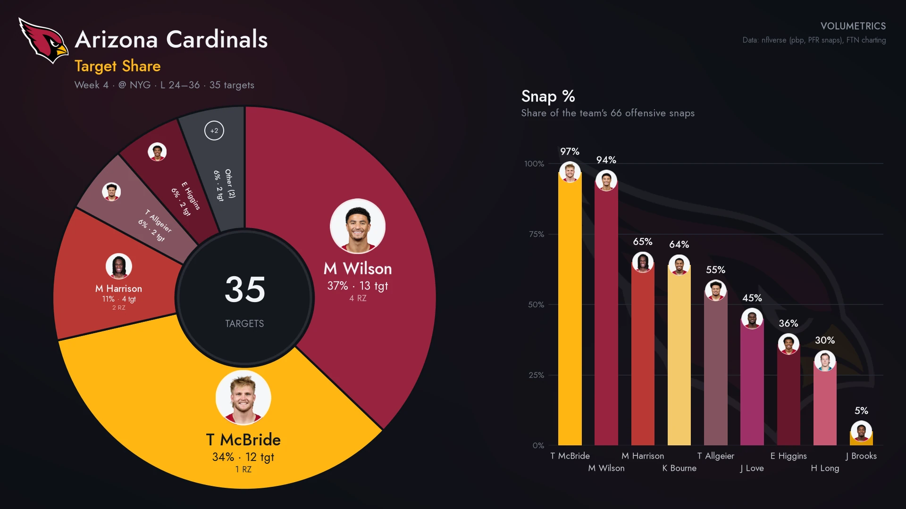
Look at how tight M Wilson and T McBride are: 13 targets to 12. T McBride actually played more snaps (97% to 94%). M Wilson also got 4 of the team's 8 red-zone targets, and that's where touchdowns come from.
Why this take
- M Wilson 37.1% vs T McBride 34.3% (gap <= 4%)
- M Wilson: 4 of 8 team red-zone targets
Atlanta Falcons
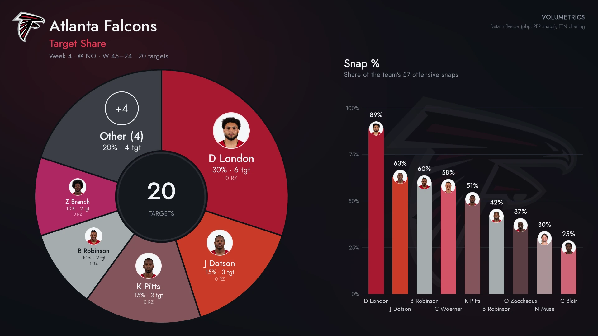
D London is the clear No. 1 here with 30% of the targets (6). Don't panic on B Robinson: 10% of the looks this week, but he was at 25% coming in and still played 60% of the snaps. I'd buy low. Only 20 targets to go around, so even a big share doesn't buy much.
Why this take
- D London: 30.0% target share (>= 28%)
- B Robinson: 25% prior avg -> 10%; snaps 67% -> 60%
- 20 team targets (<= 22)
Baltimore Ravens
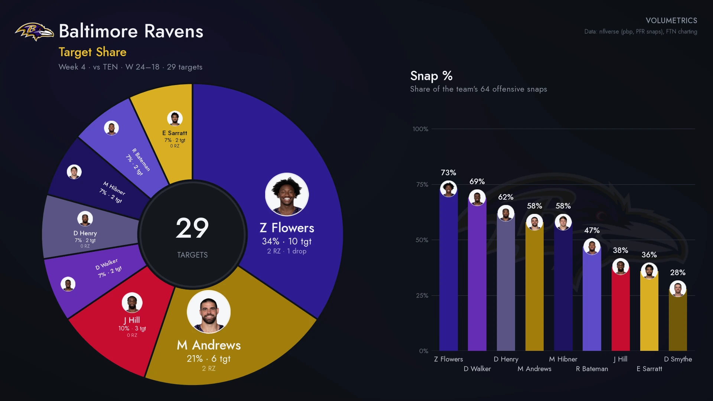
Z Flowers is the clear No. 1 here with 34% of the targets (10). Notice M Andrews earned 6 targets while only playing 58% of the snaps. That's a guy getting open when he's out there. Z Flowers also got 2 of the team's 4 red-zone targets, and that's where touchdowns come from. No wide receiver played more than 73% of the snaps, so a rotation is capping everybody's ceiling.
Why this take
- Z Flowers: 34.5% target share (>= 28%)
- M Andrews: 21% target share on 58% snaps
- Z Flowers: 2 of 4 team red-zone targets
- max WR snap share 73% (< 75%)
Buffalo Bills
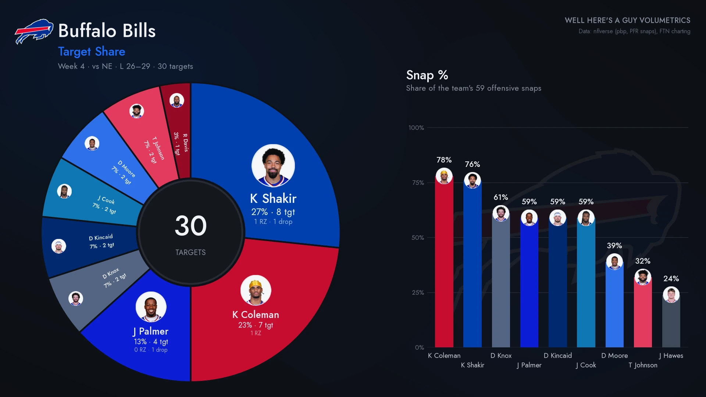
K Shakir (27%) and K Coleman (23%) are a lot closer than most people think. D Kincaid only saw 7% of the targets after averaging 21%, even on 59% of the snaps. The role is still there. This is a buy-low window.
Why this take
- K Shakir 26.7% vs K Coleman 23.3% (gap <= 4%)
- D Kincaid: 21% prior avg -> 7%; snaps 68% -> 59%
Carolina Panthers
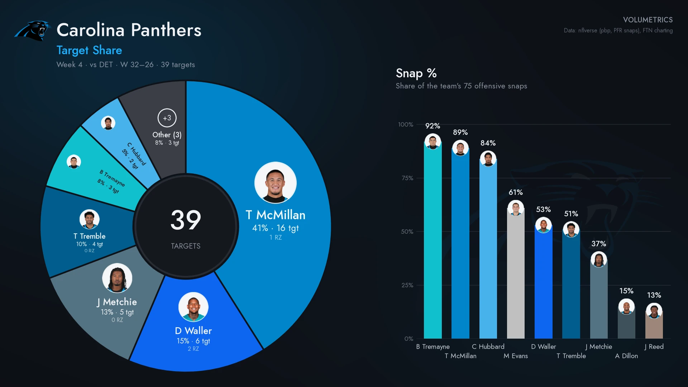
T McMillan ate 41% of the targets, 16 looks, and turned it into 14-192, 2 TDs. When a receiver clears 40% of the targets, a monster game is usually coming, and that's exactly what we got. With J Coker not taking an offensive snap, notice B Tremayne was out there for 92% of the snaps, up from 39%. The targets haven't caught up yet, but if J Coker is out another week, he's a sneaky pickup. D Waller got 2 of the team's 4 red-zone targets, and that's where touchdowns come from.
Why this take
- T McMillan: 16/39 = 41.0% target share (>= 40%)
- J Coker averaged 21% share before, 0 offensive snaps this week; B Tremayne share 5% -> 8%, snaps 39% -> 92%
- D Waller: 2 of 4 team red-zone targets
Chicago Bears
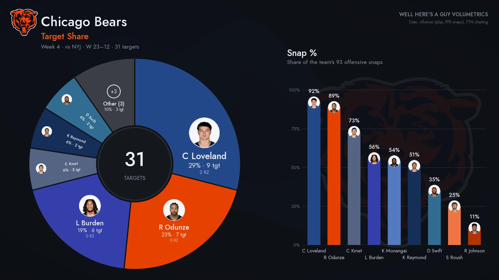
This passing game runs through C Loveland: 9 targets, 29% of the share. K Raymond only saw 6% of the targets after averaging 24%, even on 51% of the snaps. The role is still there. This is a buy-low window. Notice L Burden earned 6 targets while only playing 56% of the snaps. That's a guy getting open when he's out there. C Loveland also got 2 of the team's 3 red-zone targets, and that's where touchdowns come from.
Why this take
- C Loveland: 29.0% target share (>= 28%)
- K Raymond: 24% prior avg -> 6%; snaps 66% -> 51%
- L Burden: 19% target share on 56% snaps
- C Loveland: 2 of 3 team red-zone targets
Cincinnati Bengals
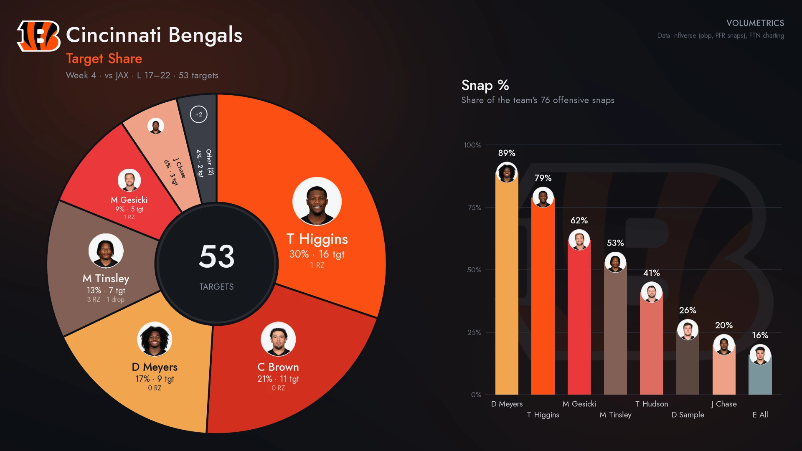
This passing game runs through T Higgins: 16 targets, 30% of the share. J Chase fell to 6% of the targets and only played 20% of the snaps after averaging 94%, so something kept him off the field. Check the injury report before reading anything into it. M Tinsley got 3 of the team's 6 red-zone targets, and that's where touchdowns come from.
Why this take
- T Higgins: 30.2% target share (>= 28%)
- J Chase: 24% prior avg -> 6%; snaps 94% -> 20%
- M Tinsley: 3 of 6 team red-zone targets
Cleveland Browns
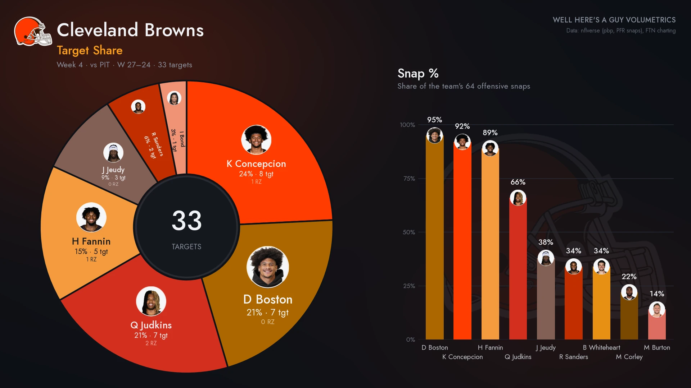
K Concepcion (24%) and D Boston (21%) are a lot closer than most people think. D Boston actually played more snaps (95% to 92%). Q Judkins' role is growing: 21% of the looks after averaging 11%. Q Judkins also got 2 of the team's 4 red-zone targets, and that's where touchdowns come from. A lot of targets spread around this week: 4 guys hit double-digit share and nobody topped 24%.
Why this take
- K Concepcion 24.2% vs D Boston 21.2% (gap <= 4%)
- Q Judkins: 11% prior avg -> 21% (+10%)
- Q Judkins: 2 of 4 team red-zone targets
- top share 24% (< 25%), 4 players >= 10%
Dallas Cowboys
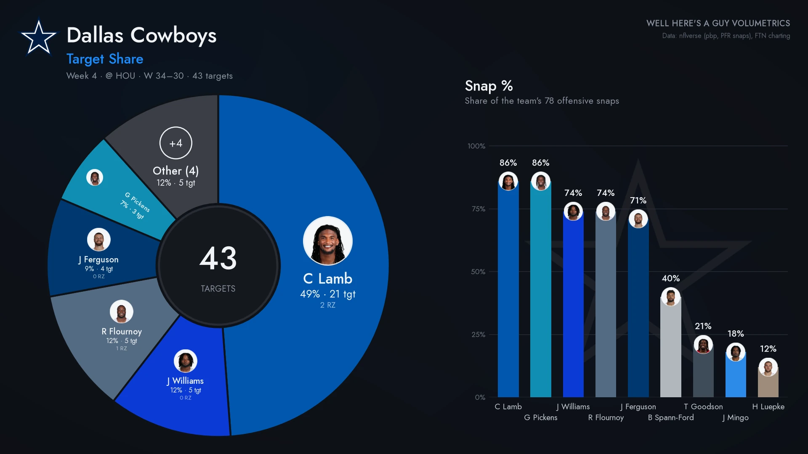
21 targets for C Lamb. That's 49% of the pie, and it went for 17-189, 1 TD. Any time a guy gets over 40% of the looks, you expect a big day, and he delivered. Don't panic on G Pickens: 7% of the looks this week, but he was at 24% coming in and still played 86% of the snaps. I'd buy low. C Lamb also got 2 of the team's 3 red-zone targets, and that's where touchdowns come from.
Why this take
- C Lamb: 21/43 = 48.8% target share (>= 40%)
- G Pickens: 24% prior avg -> 7%; snaps 82% -> 86%
- C Lamb: 2 of 3 team red-zone targets
Denver Broncos
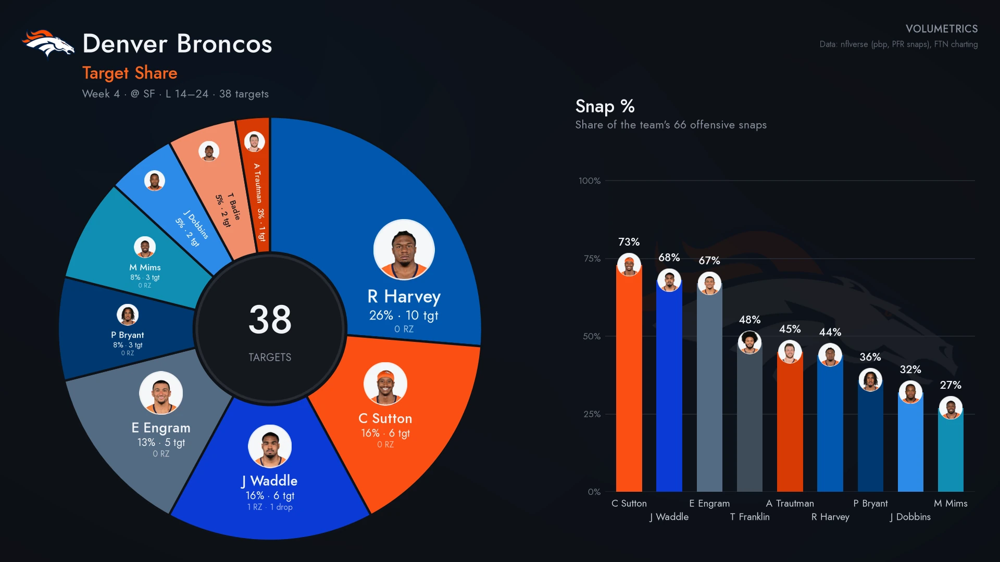
R Harvey pulled 26% of the targets on just 44% of the snaps. If that snap share climbs, he's a sneaky add. No wide receiver played more than 73% of the snaps, so a rotation is capping everybody's ceiling.
Why this take
- R Harvey: 26% target share on 44% snaps
- max WR snap share 73% (< 75%)
Detroit Lions
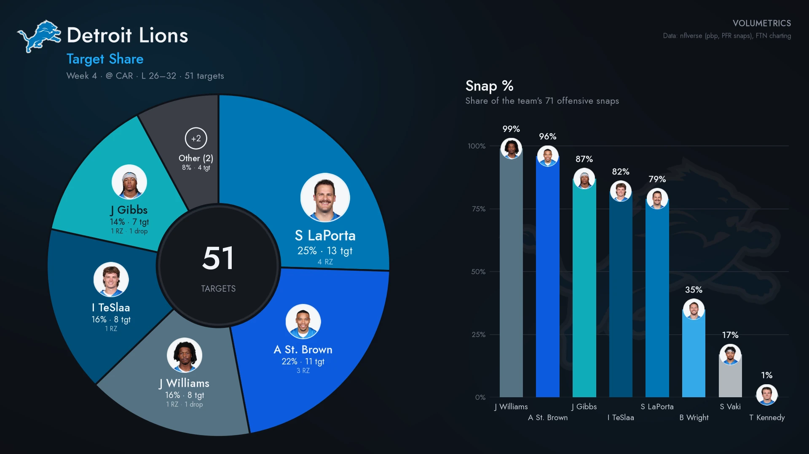
Look at how tight S LaPorta and A St. Brown are: 13 targets to 11. A St. Brown actually played more snaps (96% to 79%). 51 targets total, so this team threw a ton. Don't expect every number here to repeat.
Why this take
- S LaPorta 25.5% vs A St. Brown 21.6% (gap <= 4%)
- 51 team targets (>= 45)
Green Bay Packers
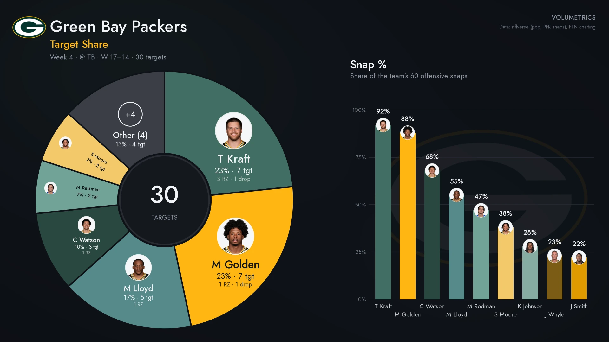
T Kraft (23%) and M Golden (23%) are a lot closer than most people think. C Watson only saw 10% of the targets after averaging 26%, even on 68% of the snaps. The role is still there. This is a buy-low window. T Kraft also got 3 of the team's 7 red-zone targets, and that's where touchdowns come from. No one dominated here. 4 different players got 10%+ of the looks, which is fine for the offense and tough for fantasy.
Why this take
- T Kraft 23.3% vs M Golden 23.3% (gap <= 4%)
- C Watson: 26% prior avg -> 10%; snaps 82% -> 68%
- T Kraft: 3 of 7 team red-zone targets
- top share 23% (< 25%), 4 players >= 10%
Houston Texans
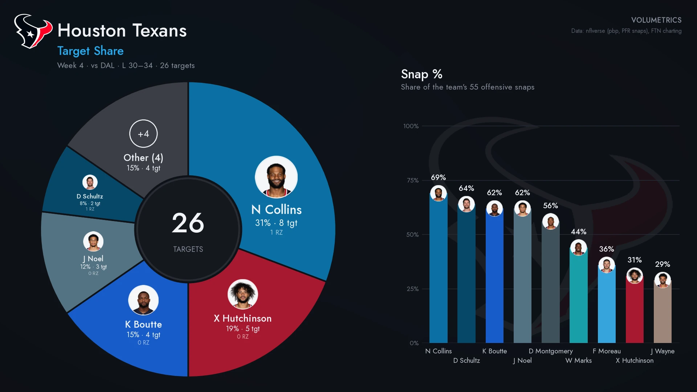
This passing game runs through N Collins: 8 targets, 31% of the share. D Schultz only saw 8% of the targets after averaging 21%, even on 64% of the snaps. The role is still there. This is a buy-low window. X Hutchinson pulled 19% of the targets on just 31% of the snaps. If that snap share climbs, he's a sneaky add.
Why this take
- N Collins: 30.8% target share (>= 28%)
- D Schultz: 21% prior avg -> 8%; snaps 63% -> 64%
- X Hutchinson: 19% target share on 31% snaps
Indianapolis Colts
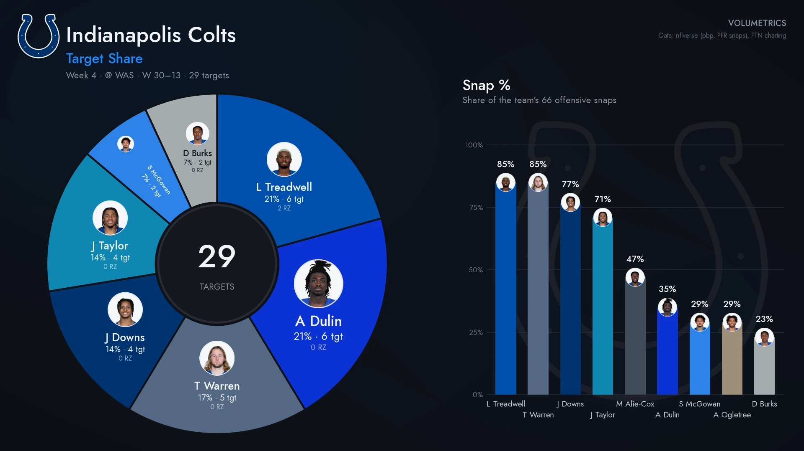
With K Allen not taking an offensive snap, A Dulin jumped to 21% of the targets after averaging 3%. If K Allen is out another week, A Dulin is a sneaky pickup. Don't panic on J Downs: 14% of the looks this week, but he was at 25% coming in and still played 77% of the snaps. I'd buy low. L Treadwell got both of the team's red-zone targets, and that's where touchdowns come from.
Why this take
- K Allen averaged 21% share before, 0 offensive snaps this week; A Dulin share 3% -> 21%, snaps 19% -> 35%
- J Downs: 25% prior avg -> 14%; snaps 80% -> 77%
- L Treadwell: 2 of 2 team red-zone targets
Jacksonville Jaguars
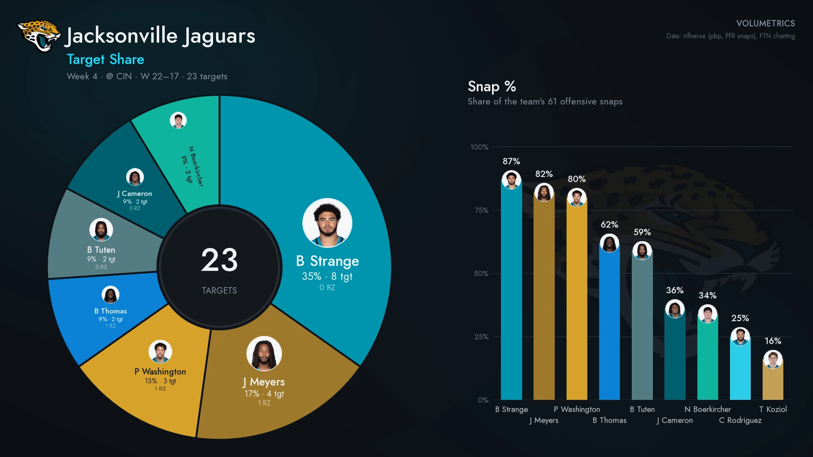
This passing game runs through B Strange: 8 targets, 35% of the share. Don't panic on P Washington: 13% of the looks this week, but he was at 30% coming in and still played 80% of the snaps. I'd buy low.
Why this take
- B Strange: 34.8% target share (>= 28%)
- P Washington: 30% prior avg -> 13%; snaps 74% -> 80%
Kansas City Chiefs
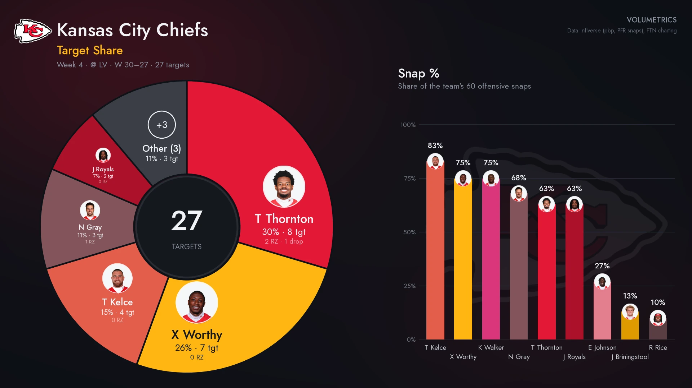
T Thornton (30%) and X Worthy (26%) are a lot closer than most people think. X Worthy actually played more snaps (75% to 63%). K Walker only saw 4% of the targets after averaging 19%, even on 75% of the snaps. The role is still there. This is a buy-low window. T Thornton also got 2 of the team's 3 red-zone targets, and that's where touchdowns come from.
Why this take
- T Thornton 29.6% vs X Worthy 25.9% (gap <= 4%)
- K Walker: 19% prior avg -> 4%; snaps 74% -> 75%
- T Thornton: 2 of 3 team red-zone targets
Las Vegas Raiders
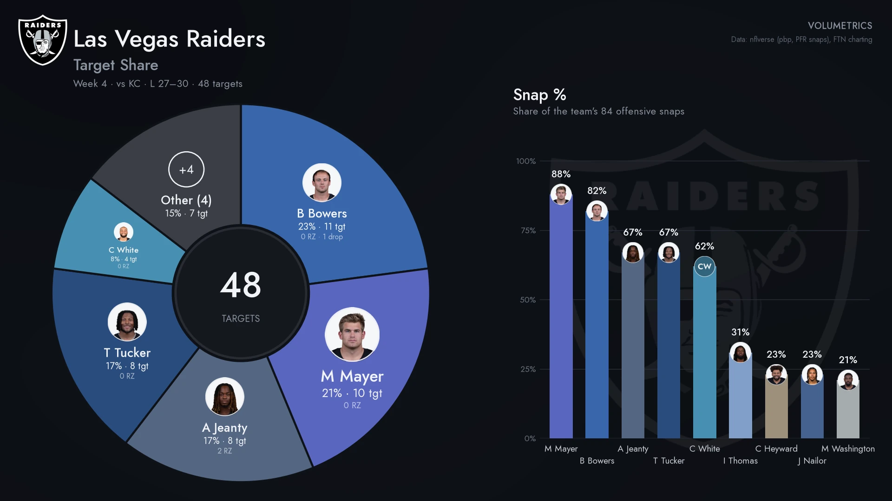
Look at how tight B Bowers and M Mayer are: 11 targets to 10. M Mayer actually played more snaps (88% to 82%). This passing offense is a mess: no receiver cleared 75% of the snaps and nobody got a real share of the targets (top guy was 23%). Hard to trust anyone here until something changes. A Jeanty got both of the team's red-zone targets, and that's where touchdowns come from.
Why this take
- B Bowers 22.9% vs M Mayer 20.8% (gap <= 4%)
- top share 23% (< 25%), 4 players >= 10%, max WR snaps 67%
- A Jeanty: 2 of 2 team red-zone targets
Los Angeles Chargers
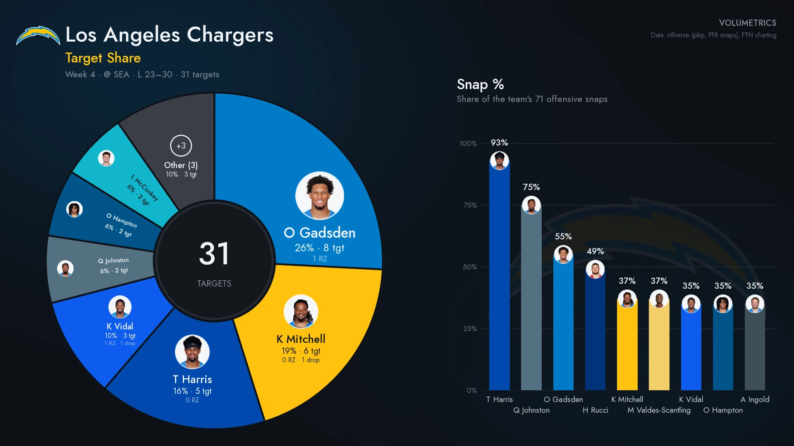
With D Njoku not taking an offensive snap, O Gadsden jumped to 26% of the targets after averaging 8%. If D Njoku is out another week, O Gadsden is a sneaky pickup. K Mitchell's role is growing: 19% of the looks after averaging 4%. Don't panic on Q Johnston: 6% of the looks this week, but he was at 20% coming in and still played 75% of the snaps. I'd buy low.
Why this take
- D Njoku averaged 15% share before, 0 offensive snaps this week; O Gadsden share 8% -> 26%, snaps 40% -> 55%
- K Mitchell: 4% prior avg -> 19% (+15%)
- Q Johnston: 20% prior avg -> 6%; snaps 82% -> 75%
Los Angeles Rams
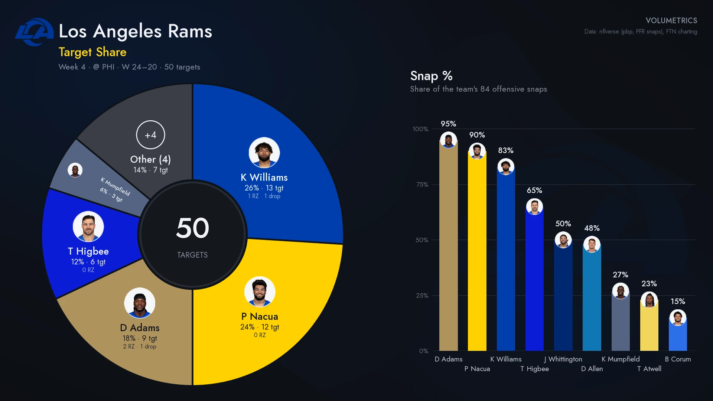
Look at how tight K Williams and P Nacua are: 13 targets to 12. P Nacua actually played more snaps (90% to 83%). D Adams got 2 of the team's 3 red-zone targets, and that's where touchdowns come from. 50 targets total, so this team threw a ton. Don't expect every number here to repeat.
Why this take
- K Williams 26.0% vs P Nacua 24.0% (gap <= 4%)
- D Adams: 2 of 3 team red-zone targets
- 50 team targets (>= 45)
Miami Dolphins
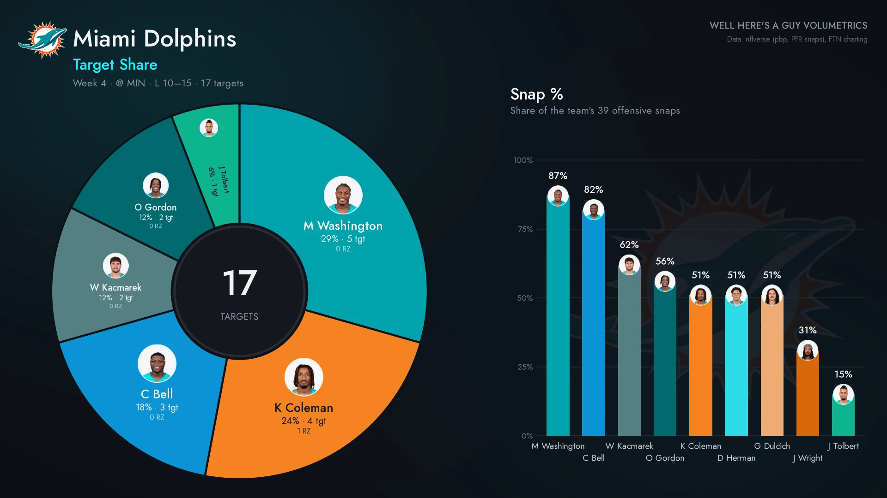
C Douglas didn't play a snap, and K Coleman is the guy who soaked it up: 24% of the targets, up from 6%. Keep him in mind if C Douglas misses more time. M Washington is the clear No. 1 here with 29% of the targets (5). Only 17 targets to go around, so even a big share doesn't buy much.
Why this take
- C Douglas averaged 19% share before, 0 offensive snaps this week; K Coleman share 6% -> 24%, snaps 46% -> 51%
- M Washington: 29.4% target share (>= 28%)
- 17 team targets (<= 22)
Minnesota Vikings
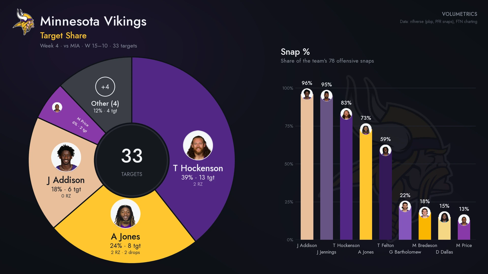
J Jefferson didn't play a snap, and T Hockenson is the guy who soaked it up: 39% of the targets, up from 20%. Keep him in mind if J Jefferson misses more time. A Jones' role is growing: 24% of the looks after averaging 9%. T Hockenson also got 2 of the team's 4 red-zone targets, and that's where touchdowns come from. J Jennings was on the field for 95% of the snaps and saw just 1 look. The routes are there; the targets aren't.
Why this take
- J Jefferson averaged 26% share before, 0 offensive snaps this week; T Hockenson share 20% -> 39%, snaps 73% -> 83%
- A Jones: 9% prior avg -> 24% (+15%)
- T Hockenson: 2 of 4 team red-zone targets
- J Jennings: 95% snaps but 1 targets (3%)
New England Patriots
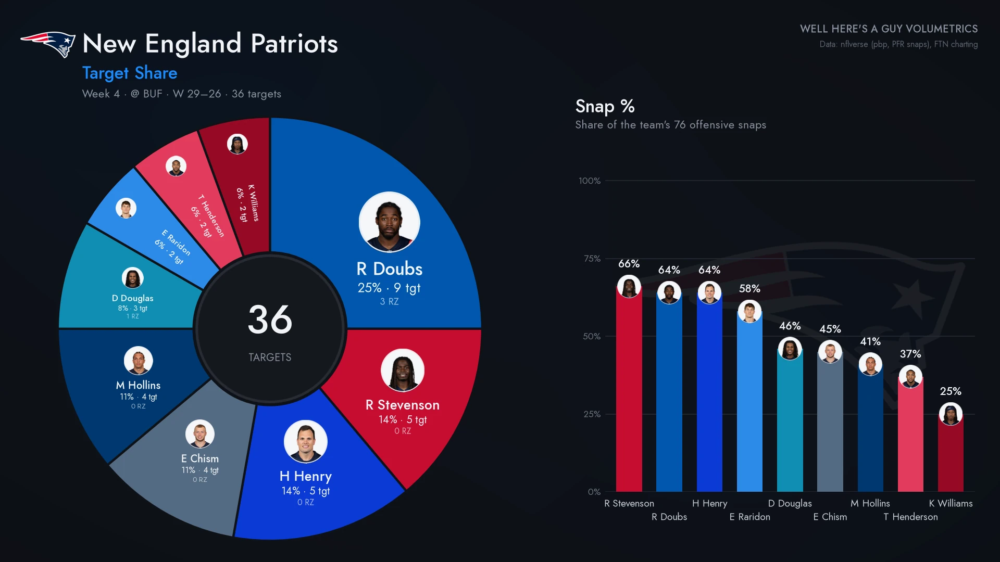
R Doubs got 3 of the team's 5 red-zone targets, and that's where touchdowns come from. No wide receiver played more than 64% of the snaps, so a rotation is capping everybody's ceiling.
Why this take
- R Doubs: 3 of 5 team red-zone targets
- max WR snap share 64% (< 75%)
New Orleans Saints
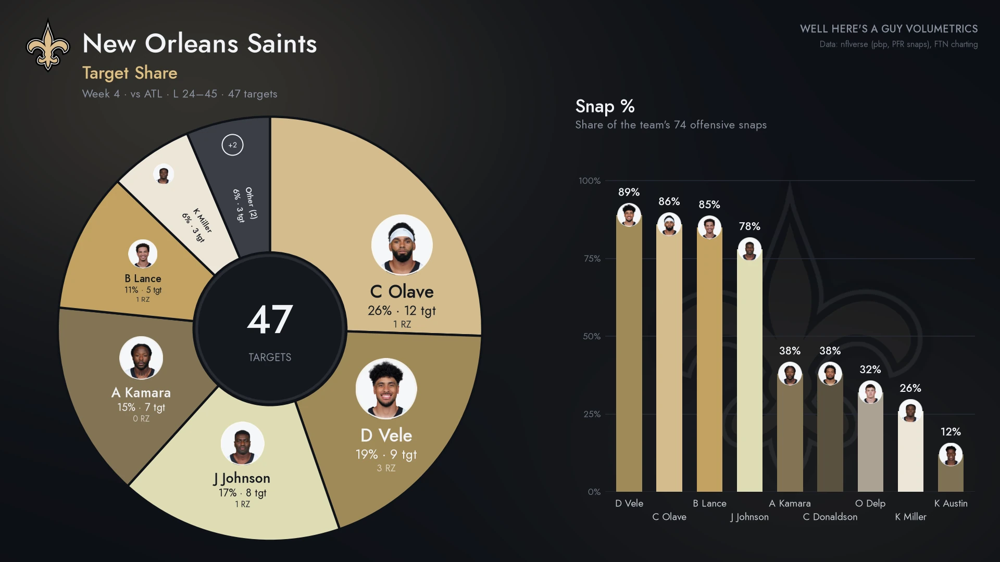
D Vele got 3 of the team's 7 red-zone targets, and that's where touchdowns come from. 47 targets total, so this team threw a ton. Don't expect every number here to repeat.
Why this take
- D Vele: 3 of 7 team red-zone targets
- 47 team targets (>= 45)
New York Giants
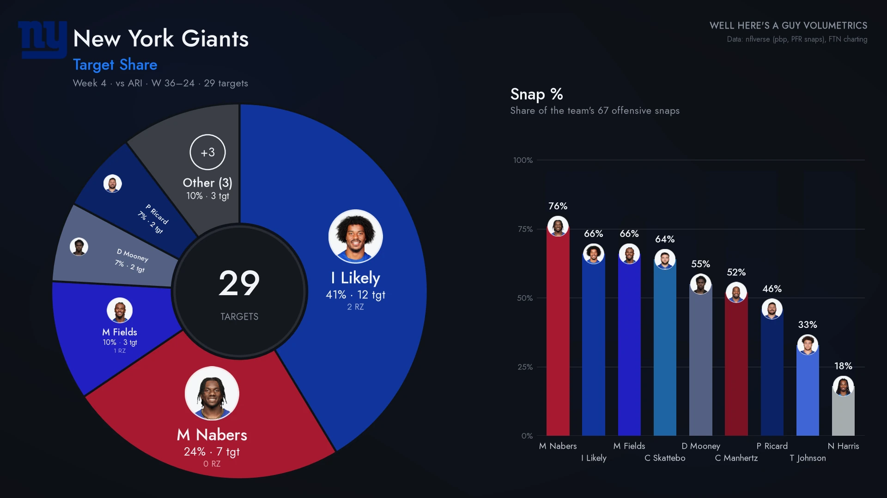
12 targets for I Likely, 41% of the team's looks, and only 7-66 to show for it. I don't care about the box score here; the volume is elite. I Likely also got 2 of the team's 4 red-zone targets, and that's where touchdowns come from.
Why this take
- I Likely: 12/29 = 41.4% target share (>= 40%)
- I Likely: 2 of 4 team red-zone targets
New York Jets
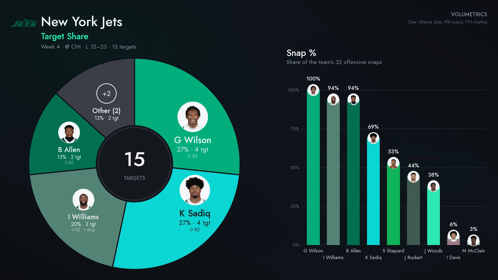
With A Mitchell not taking an offensive snap, K Sadiq jumped to 27% of the targets after averaging 15%. If A Mitchell is out another week, K Sadiq is a sneaky pickup. Notice I Williams is trending up: 20% of the targets this week vs 9% coming in. Only 15 targets to go around, so even a big share doesn't buy much.
Why this take
- A Mitchell averaged 23% share before, 0 offensive snaps this week; K Sadiq share 15% -> 27%, snaps 45% -> 69%
- I Williams: 9% prior avg -> 20% (+11%)
- 15 team targets (<= 22)
Philadelphia Eagles
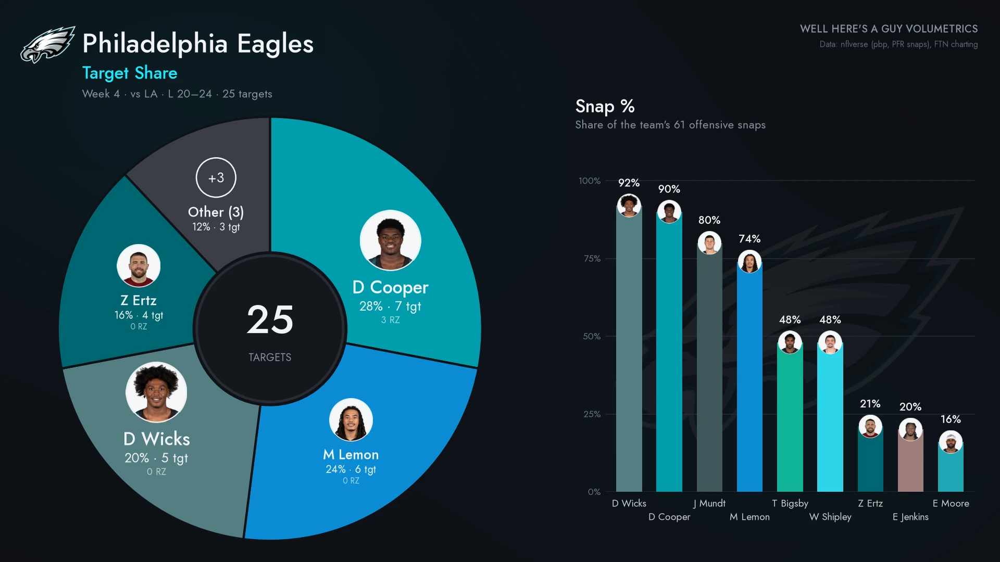
With D Smith not taking an offensive snap, D Cooper jumped to 28% of the targets after averaging 3%. If D Smith is out another week, D Cooper is a sneaky pickup. M Lemon's role is growing: 24% of the looks after averaging 12%. D Cooper also got all 3 of the team's red-zone targets, and that's where touchdowns come from. Notice J Mundt actually played 80% of the snaps and didn't get a single target.
Why this take
- D Smith averaged 33% share before, 0 offensive snaps this week; D Cooper share 3% -> 28%, snaps 22% -> 90%
- M Lemon: 12% prior avg -> 24% (+12%)
- D Cooper: 3 of 3 team red-zone targets
- J Mundt: 80% snaps but 0 targets (0%)
Pittsburgh Steelers
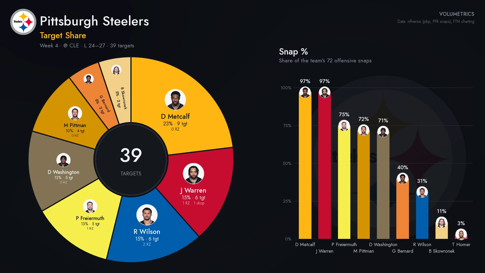
No one dominated here. 6 different players got 10%+ of the looks, which is fine for the offense and tough for fantasy. J Warren had 6 targets out of the backfield (15%). That's real PPR value.
Why this take
- top share 23% (< 25%), 6 players >= 10%
- J Warren (RB): 15% target share
San Francisco 49ers
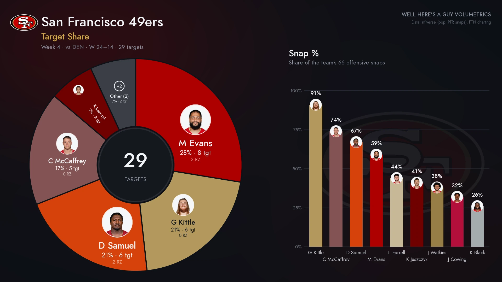
Notice M Evans earned 8 targets while only playing 59% of the snaps. That's a guy getting open when he's out there. M Evans also got 2 of the team's 4 red-zone targets, and that's where touchdowns come from. No wide receiver played more than 67% of the snaps, so a rotation is capping everybody's ceiling. C McCaffrey had 5 targets out of the backfield (17%). That's real PPR value.
Why this take
- M Evans: 28% target share on 59% snaps
- M Evans: 2 of 4 team red-zone targets
- max WR snap share 67% (< 75%)
- C McCaffrey (RB): 17% target share
Seattle Seahawks
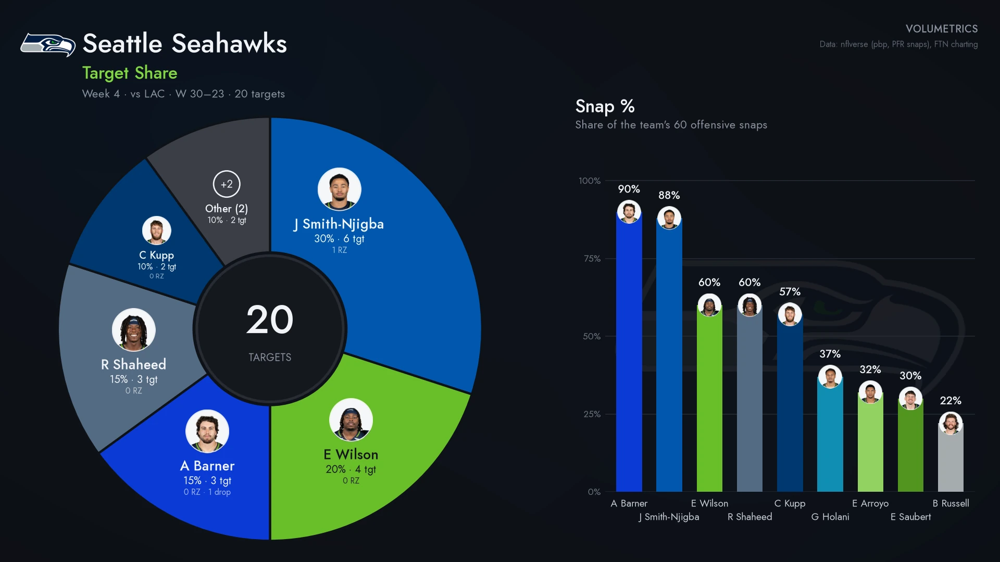
This passing game runs through J Smith-Njigba: 6 targets, 30% of the share. E Wilson's role is growing: 20% of the looks after averaging 1%. Only 20 targets to go around, so even a big share doesn't buy much.
Why this take
- J Smith-Njigba: 30.0% target share (>= 28%)
- E Wilson: 1% prior avg -> 20% (+19%)
- 20 team targets (<= 22)
Tampa Bay Buccaneers
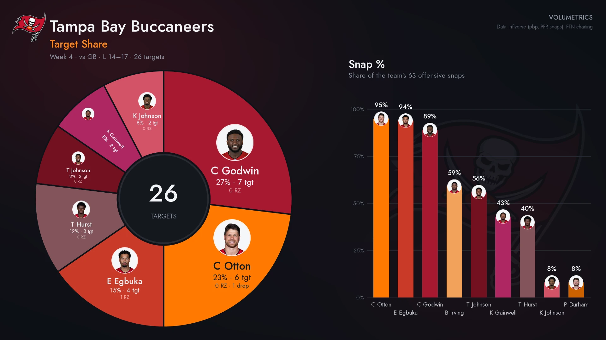
Look at how tight C Godwin and C Otton are: 7 targets to 6. C Otton actually played more snaps (95% to 89%).
Why this take
- C Godwin 26.9% vs C Otton 23.1% (gap <= 4%)
Tennessee Titans
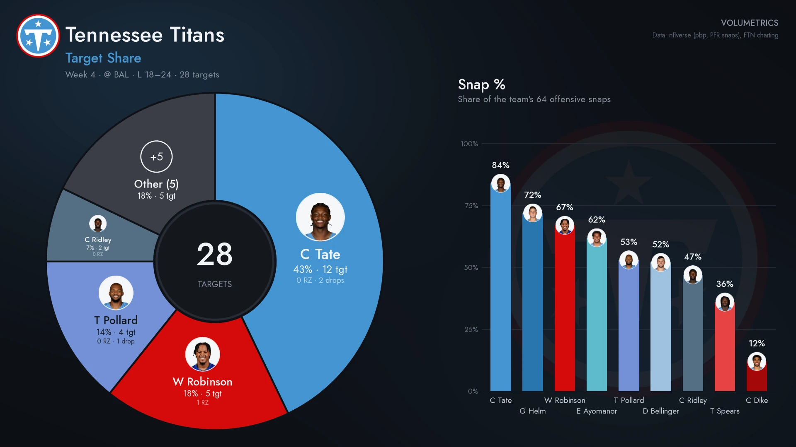
12 targets for C Tate. That's 43% of the pie, and it went for 9-145. Any time a guy gets over 40% of the looks, you expect a big day, and he delivered. C Tate did drop 2 balls, which is the kind of thing that costs you targets if it keeps up.
Why this take
- C Tate: 12/28 = 42.9% target share (>= 40%)
- C Tate: 2 drops (FTN)
Washington Commanders
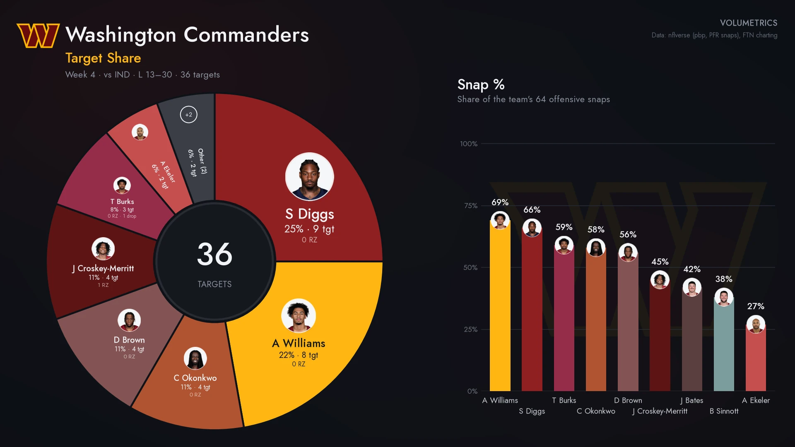
With T McLaurin not taking an offensive snap, A Williams jumped to 22% of the targets after averaging 12%. If T McLaurin is out another week, A Williams is a sneaky pickup. No wide receiver played more than 69% of the snaps, so a rotation is capping everybody's ceiling.
Why this take
- T McLaurin averaged 23% share before, 0 offensive snaps this week; A Williams share 12% -> 22%, snaps 42% -> 69%
- max WR snap share 69% (< 75%)
Week 4 backfields
| Top 8 rushers | ||||||
|---|---|---|---|---|---|---|
| K Monangai | 30 | 146 | 60% | 54% | 8 | 29.9 |
| D Henry | 23 | 73 | 88% | 62% | 5 | 19.2 |
| K Walker | 22 | 177 | 92% | 75% | 5 | 19.2 |
| E Wilson | 21 | 81 | 70% | 60% | 5 | 18.8 |
| A Jones | 20 | 94 | 77% | 73% | 4 | 21.3 |
| J Taylor | 20 | 95 | 71% | 71% | 3 | 17.5 |
| C Hubbard | 20 | 122 | 80% | 84% | 2 | 14.9 |
| J Williams | 19 | 62 | 83% | 74% | 11 | 26.6 |
Tap a back to jump to his team, or a column to re-sort. HVT = catches plus carries inside the 10. xFP = the PPR points an average back would score on that workload.
League view
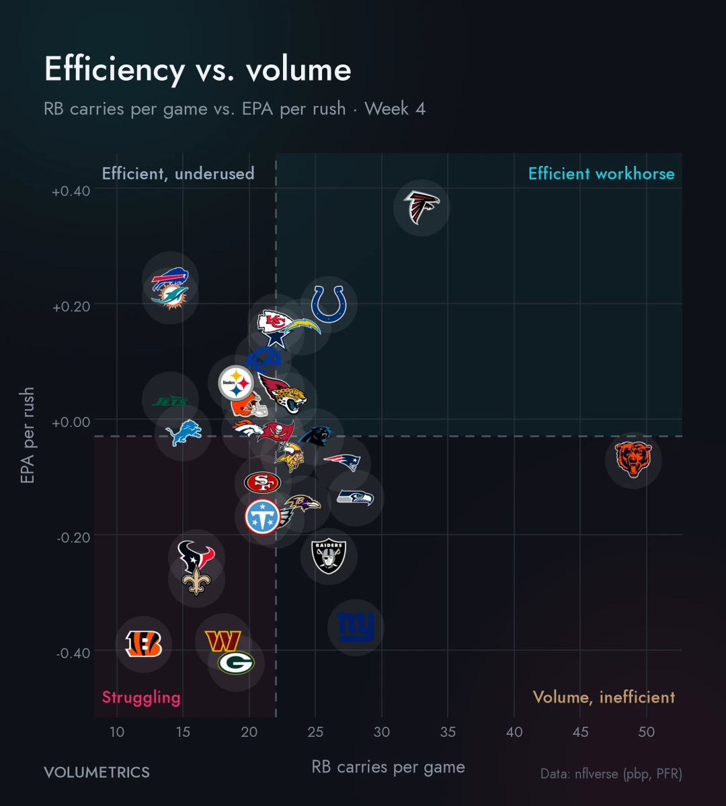
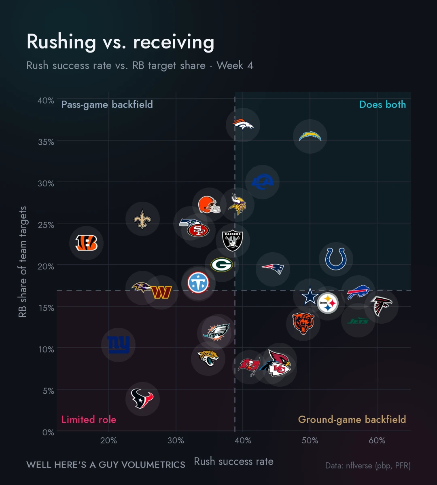
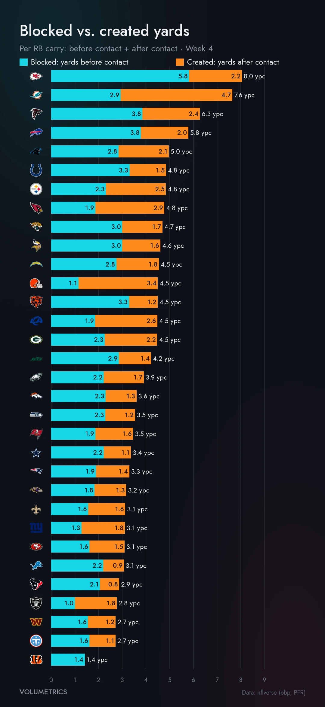
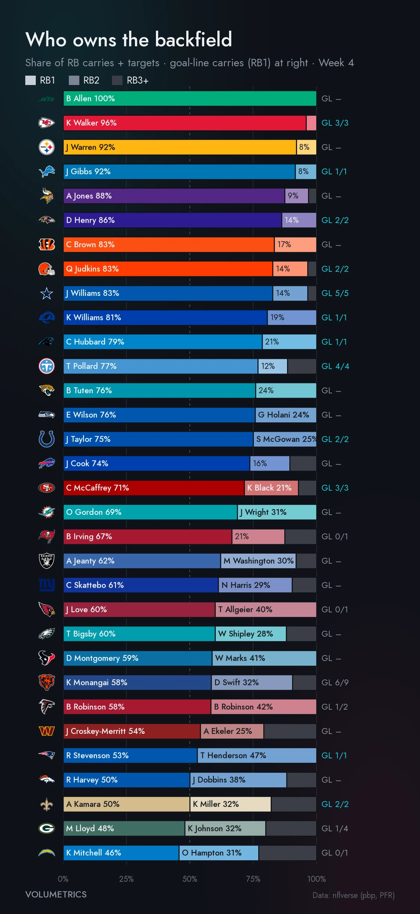
Team by team
Arizona Cardinals
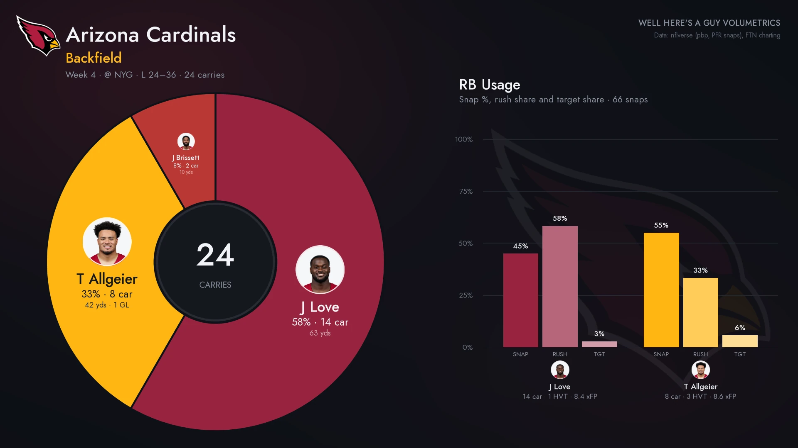
This is a committee: J Love 58% of the carries, T Allgeier 33%. T Allgeier has the passing-down edge with 2 targets to 1. Hard to trust either as more than a flex.
Why this take
- J Love 58% / T Allgeier 33% of carries
Atlanta Falcons
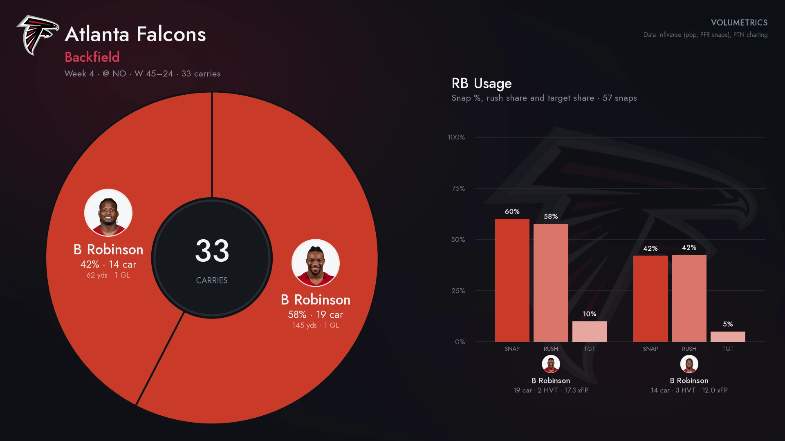
This is a committee: B Robinson 58% of the carries, B Robinson 42%. B Robinson has the passing-down edge with 2 targets to 1. Hard to trust either as more than a flex.
Why this take
- B Robinson 58% / B Robinson 42% of carries
Baltimore Ravens
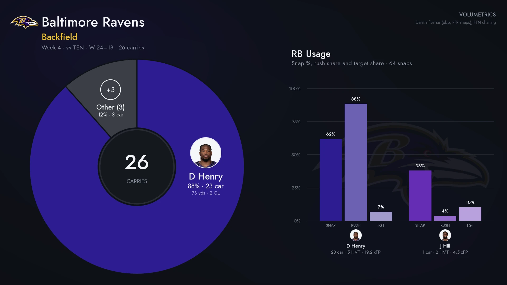
D Henry is the lead back (23 carries, 88%) but not a workhorse: he played 62% of the snaps. D Henry also got both of the team's carries inside the 5. That's the touchdown role. J Hill is the passing-down back: 3 targets (10% of the team's) on 38% of the snaps. That's real value in PPR.
Why this take
- D Henry: 88% rush share, 62% snaps
- D Henry: 2 of 2 carries inside the 5
- J Hill: 10% target share, 4% rush share
Buffalo Bills
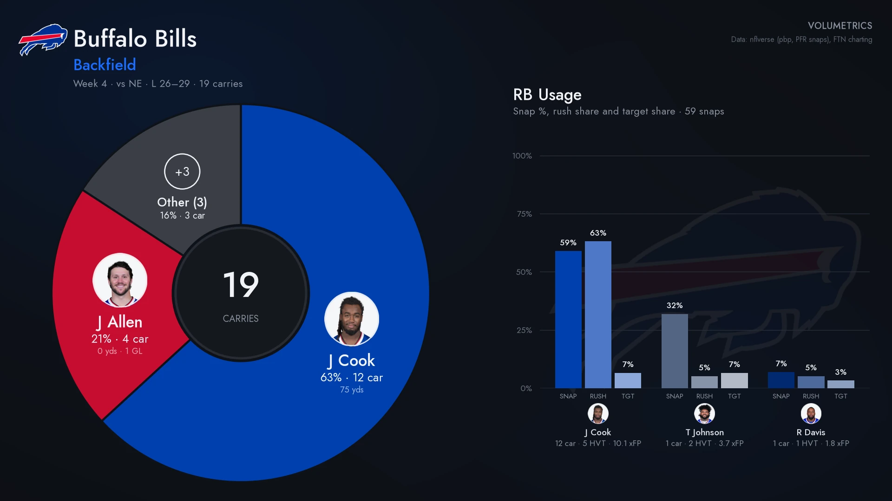
J Cook is the lead back (12 carries, 63%) but not a workhorse: he played 59% of the snaps.
Why this take
- J Cook: 63% rush share, 59% snaps
Carolina Panthers
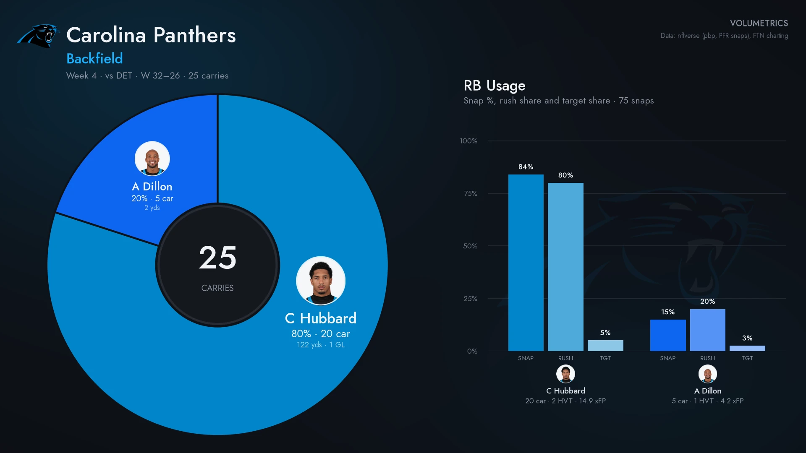
No committee here. C Hubbard played 84% of the snaps and took 20 of 25 carries. That's been his job all 4 games (70% of the carries).
Why this take
- C Hubbard: 84% snaps, 80% rush share
Chicago Bears
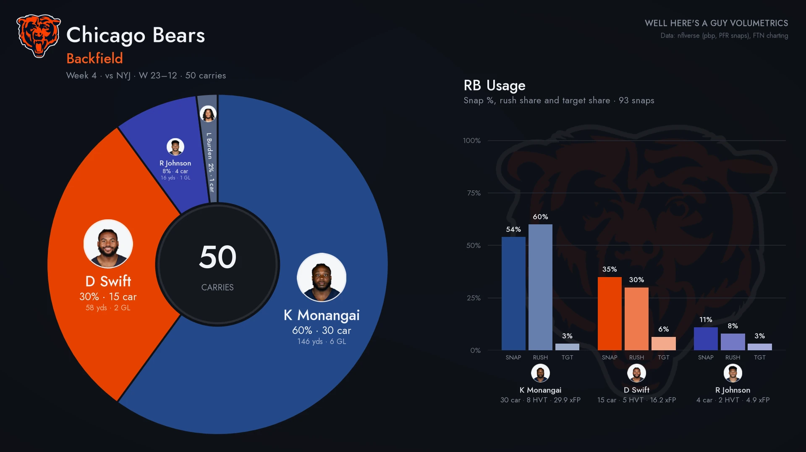
This is a committee: K Monangai 60% of the carries, D Swift 30%. D Swift has the passing-down edge with 2 targets to 1. Hard to trust either as more than a flex. K Monangai also got 6 of the team's 9 carries inside the 5. That's the touchdown role.
Why this take
- K Monangai 60% / D Swift 30% of carries
- K Monangai: 6 of 9 carries inside the 5
Cincinnati Bengals
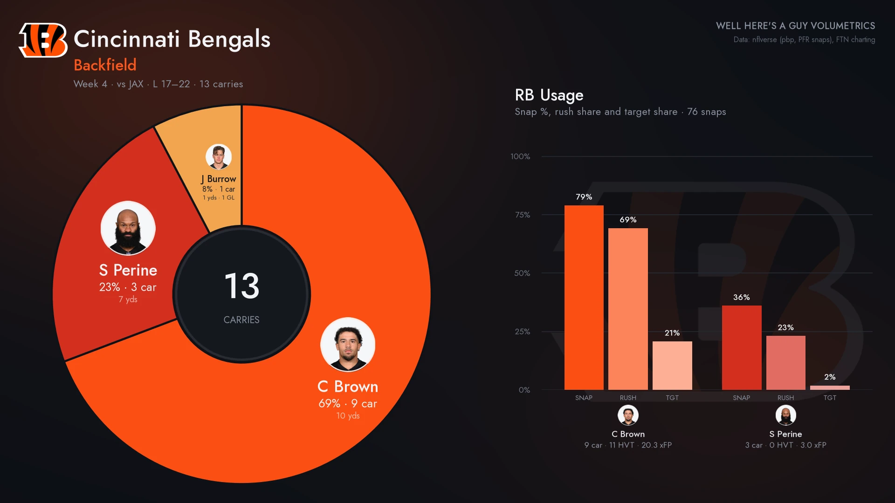
C Brown is a true workhorse: 79% of the snaps and 69% of the carries (9). That's been his job all 4 games (76% of the carries). C Brown had 11 high-value touches (catches plus carries inside the 10). Those are the touches that score fantasy points.
Why this take
- C Brown: 79% snaps, 69% rush share
- C Brown: 11 high-value touches
Cleveland Browns
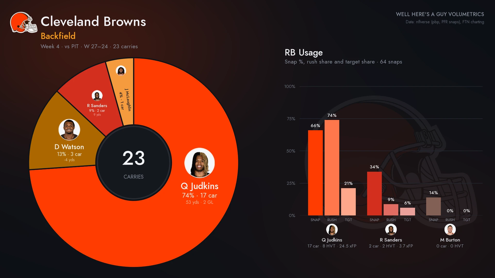
Q Judkins is the lead back (17 carries, 74%) but not a workhorse: he played 66% of the snaps. Q Judkins also got both of the team's carries inside the 5. That's the touchdown role.
Why this take
- Q Judkins: 74% rush share, 66% snaps
- Q Judkins: 2 of 2 carries inside the 5
Dallas Cowboys
J Williams is a true workhorse: 74% of the snaps and 83% of the carries (19). That's been his job all 4 games (75% of the carries). J Williams also got all 5 of the team's carries inside the 5. That's the touchdown role.
Why this take
- J Williams: 74% snaps, 83% rush share
- J Williams: 5 of 5 carries inside the 5
Denver Broncos
This is a committee: J Dobbins 55% of the carries, R Harvey 35%. R Harvey has the passing-down edge with 10 targets to 2. Hard to trust either as more than a flex. R Harvey had 10 high-value touches (catches plus carries inside the 10). Those are the touches that score fantasy points.
Why this take
- J Dobbins 55% / R Harvey 35% of carries
- R Harvey: 10 high-value touches
Detroit Lions
No committee here. J Gibbs played 87% of the snaps and took 15 of 15 carries. That's been his job all 4 games (88% of the carries).
Why this take
- J Gibbs: 87% snaps, 100% rush share
Green Bay Packers
This is a committee: K Johnson 36% of the carries, M Lloyd 32%. M Lloyd has the passing-down edge with 5 targets to 0. Hard to trust either as more than a flex. K Johnson also got 2 of the team's 4 carries inside the 5. That's the touchdown role.
Why this take
- K Johnson 36% / M Lloyd 32% of carries
- K Johnson: 2 of 4 carries inside the 5
Houston Texans
This is a committee: D Montgomery 59% of the carries, W Marks 35%. W Marks has the passing-down edge with 1 targets to 0. Hard to trust either as more than a flex.
Why this take
- D Montgomery 59% / W Marks 35% of carries
Indianapolis Colts
No committee here. J Taylor played 71% of the snaps and took 20 of 28 carries. That's been his job all 4 games (80% of the carries). J Taylor also got 2 of the team's 3 carries inside the 5. That's the touchdown role.
Why this take
- J Taylor: 71% snaps, 71% rush share
- J Taylor: 2 of 3 carries inside the 5
Jacksonville Jaguars
B Tuten is the lead back (17 carries, 68%) but not a workhorse: he played 59% of the snaps and C Rodriguez still got 6 carries.
Why this take
- B Tuten: 68% rush share, 59% snaps
Kansas City Chiefs
No committee here. K Walker played 75% of the snaps and took 22 of 24 carries. That's been his job all 4 games (82% of the carries). K Walker also got all 3 of the team's carries inside the 5. That's the touchdown role.
Why this take
- K Walker: 75% snaps, 92% rush share
- K Walker: 3 of 3 carries inside the 5
Las Vegas Raiders
This is a committee: A Jeanty 58% of the carries, M Washington 35%. A Jeanty has the passing-down edge with 8 targets to 2. Hard to trust either as more than a flex. A Jeanty had 6 high-value touches (catches plus carries inside the 10). Those are the touches that score fantasy points.
Why this take
- A Jeanty 58% / M Washington 35% of carries
- A Jeanty: 6 high-value touches
Los Angeles Chargers
This is a committee: K Mitchell 37% of the carries, O Hampton 33%. K Mitchell has the passing-down edge with 6 targets to 2. Hard to trust either as more than a flex.
Why this take
- K Mitchell 37% / O Hampton 33% of carries
Los Angeles Rams
K Williams is a true workhorse: 83% of the snaps and 73% of the carries (16). B Corum's grip on the backfield is slipping: 44% of the carries early in this stretch, 25% lately. K Williams had 13 high-value touches (catches plus carries inside the 10). Those are the touches that score fantasy points.
Why this take
- K Williams: 83% snaps, 73% rush share
- B Corum: rush share 44% -> 25% over 4
- K Williams: 13 high-value touches
Miami Dolphins
D Achane didn't play in Week 4 after taking 78% of the carries early in this stretch. O Gordon took 53% of the carries in Week 4. If D Achane sits again, O Gordon is the add. O Gordon is the lead back (9 carries, 53%) but not a workhorse: he played 56% of the snaps and J Wright still got 5 carries.
Why this take
- D Achane: 78% rush share early, missed [4]
- O Gordon: 53% rush share, 56% snaps
Minnesota Vikings
No committee here. A Jones played 73% of the snaps and took 20 of 26 carries. That's been his job all 4 games (71% of the carries).
Why this take
- A Jones: 73% snaps, 77% rush share
New England Patriots
This is a committee: T Henderson 48% of the carries, R Stevenson 45%. R Stevenson has the passing-down edge with 5 targets to 2. Hard to trust either as more than a flex.
Why this take
- T Henderson 48% / R Stevenson 45% of carries
New Orleans Saints
This is a committee: A Kamara 39% of the carries, K Miller 33%. A Kamara has the passing-down edge with 7 targets to 3. Hard to trust either as more than a flex. A Kamara also got both of the team's carries inside the 5. That's the touchdown role.
Why this take
- A Kamara 39% / K Miller 33% of carries
- A Kamara: 2 of 2 carries inside the 5
New York Giants
This is a committee: C Skattebo 64% of the carries, N Harris 32%. C Skattebo has the passing-down edge with 1 targets to 0. Hard to trust either as more than a flex.
Why this take
- C Skattebo 64% / N Harris 32% of carries
New York Jets
B Hall didn't play in Week 4 after taking 67% of the carries early in this stretch. B Allen took 100% of the carries in Week 4. If B Hall sits again, B Allen is the add. No committee here. B Allen played 94% of the snaps and took 14 of 14 carries.
Why this take
- B Hall: 67% rush share early, missed [4]
- B Allen: 94% snaps, 100% rush share
Philadelphia Eagles
T Bigsby is the lead back (14 carries, 54%) but not a workhorse: he played 48% of the snaps and W Shipley still got 6 carries.
Why this take
- T Bigsby: 54% rush share, 48% snaps
Pittsburgh Steelers
No committee here. J Warren played 97% of the snaps and took 17 of 19 carries. That's been his job all 4 games (71% of the carries).
Why this take
- J Warren: 97% snaps, 89% rush share
San Francisco 49ers
C McCaffrey is the lead back (15 carries, 52%) but not a workhorse: he played 74% of the snaps and K Black still got 6 carries. C McCaffrey also got all 3 of the team's carries inside the 5. That's the touchdown role. K Black's grip on the backfield is slipping: 41% of the carries early in this stretch, 20% lately.
Why this take
- C McCaffrey: 52% rush share, 74% snaps
- C McCaffrey: 3 of 3 carries inside the 5
- K Black: rush share 41% -> 20% over 4
Seattle Seahawks
J Price didn't play in Week 4 after taking 41% of the carries early in this stretch. E Wilson took 70% of the carries in Week 4. If J Price sits again, E Wilson is the add. E Wilson is the lead back (21 carries, 70%) but not a workhorse: he played 60% of the snaps and G Holani still got 7 carries.
Why this take
- J Price: 41% rush share early, missed [4]
- E Wilson: 70% rush share, 60% snaps
Tampa Bay Buccaneers
B Irving is the lead back (16 carries, 64%) but not a workhorse: he played 59% of the snaps and K Gainwell still got 3 carries.
Why this take
- B Irving: 64% rush share, 59% snaps
Tennessee Titans
T Pollard is the lead back (16 carries, 73%) but not a workhorse: he played 53% of the snaps and N Singleton still got 3 carries. T Pollard also got all 4 of the team's carries inside the 5. That's the touchdown role.
Why this take
- T Pollard: 73% rush share, 53% snaps
- T Pollard: 4 of 4 carries inside the 5
Washington Commanders
J Croskey-Merritt led the backfield with 9 carries (45%), with A Ekeler next at 4 (20%).
Why this take
- top two by carries
Trends: each team's last 4 games
Top target shares, last 4 games
| J Smith-Njigba | SEA | 37% |
| C Lamb | DAL | 32% |
| I Likely | NYG | 32% |
| T McBride | ARI | 31% |
| M Wilson | ARI | 30% |
Arizona Cardinals
| Target share | Wk 1 | Wk 2 | Wk 3 | Wk 4 | All |
|---|---|---|---|---|---|
| T McBride | 35% | 38% | 22% | 34% | 31% |
| M Wilson | 19% | 27% | 34% | 37% | 30% |
| K Bourne | 22% | 12% | 6% | 0% | 9% |
| M Harrison | 8% | 4% | 10% | 11% | 9% |
| J Love | 11% | 12% | 10% | 3% | 9% |
T McBride owns this offense: 31% of the targets over the last 4 games, and he hasn't dipped below 22% in any of them. That's as safe as it gets. Notice M Wilson's share climbing: 23% to 36% over the last 4 games. That's a role that's growing. Over the last 4 games, T McBride and M Wilson have soaked up 61% of the targets. Nobody else here matters much for fantasy.
Why this take
- T McBride: 31.1% share over 4 games, never below 22%
- M Wilson: 23% share in the first games of the window -> 36% in the latest
- T McBride + M Wilson = 60.8% of targets over 4
Atlanta Falcons
| Target share | Wk 1 | Wk 2 | Wk 3 | Wk 4 | All |
|---|---|---|---|---|---|
| D London | 21% | 16% | 43% | 30% | 27% |
| B Robinson | 53% | 13% | 9% | 10% | 19% |
| J Dotson | 16% | 13% | 13% | 15% | 14% |
| K Pitts | 5% | 10% | 9% | 15% | 10% |
| O Zaccheaus | 5% | 10% | 9% | 5% | 8% |
D London leads this team at 27% of the targets over the last 4, but it's swung anywhere from 16% to 43% week to week. Expect some boom and some bust. B Robinson's share has slipped from 33% to 9%, but he's still playing 66% of the snaps. The role is there. This is a buy-low window. Only about 23 targets a game over the last 4, which caps everyone's ceiling.
Why this take
- D London: 26.9% share over 4; weekly range 16%-43%
- B Robinson: share 33% -> 9%; snaps 64% -> 66%
- 23.2 team targets per game over 4
Baltimore Ravens
| Target share | Wk 1 | Wk 2 | Wk 3 | Wk 4 | All |
|---|---|---|---|---|---|
| M Andrews | 25% | 24% | 25% | 21% | 24% |
| Z Flowers | 25% | – | 30% | 34% | 22% |
| R Bateman | 4% | 31% | 15% | 7% | 15% |
| D Henry | 4% | 10% | 5% | 7% | 7% |
| J Hill | 4% | 7% | 0% | 10% | 6% |
Notice Z Flowers' share climbing: 12% to 32% over the last 4 games. His snaps went from 14% to 53% too. That's a role that's growing. Only about 26 targets a game over the last 4, which caps everyone's ceiling.
Why this take
- Z Flowers: 12% share in the first games of the window -> 32% in the latest
- 25.5 team targets per game over 4
Buffalo Bills
| Target share | Wk 1 | Wk 2 | Wk 3 | Wk 4 | All |
|---|---|---|---|---|---|
| K Shakir | 21% | 21% | 12% | 27% | 21% |
| D Moore | 29% | 0% | 38% | 7% | 18% |
| D Kincaid | 21% | 29% | 12% | 7% | 17% |
| K Coleman | 4% | 21% | 8% | 23% | 14% |
| J Cook | 14% | 11% | 4% | 7% | 9% |
Notice D Moore's share climbing: 14% to 23% over the last 4 games. That's a role that's growing. D Kincaid's share has slipped from 25% to 9%, but he's still playing 63% of the snaps. The role is there. This is a buy-low window. Notice K Shakir's snaps went from 51% to 74% over this stretch. The targets usually follow the snaps. K Shakir also has 5 of the team's 14 red-zone targets over the last 4. That's the touchdown role.
Why this take
- D Moore: 14% share in the first games of the window -> 23% in the latest
- D Kincaid: share 25% -> 9%; snaps 69% -> 63%
- K Shakir: snaps 51% -> 74%
- K Shakir: 5 of 14 team RZ targets over 4
Carolina Panthers
| Target share | Wk 1 | Wk 2 | Wk 3 | Wk 4 | All |
|---|---|---|---|---|---|
| T McMillan | 24% | 31% | 12% | 41% | 27% |
| J Coker | 26% | 28% | 10% | – | 15% |
| D Waller | 6% | 9% | 19% | 15% | 13% |
| T Tremble | 15% | 6% | 10% | 10% | 10% |
| C Hubbard | 9% | 6% | 10% | 5% | 7% |
T McMillan leads this team at 27% of the targets over the last 4, but it's swung anywhere from 12% to 41% week to week. Expect some boom and some bust. Notice D Waller's share climbing: 8% to 17% over the last 4 games. His snaps went from 40% to 52% too. That's a role that's growing. J Coker didn't play in Week 4 after drawing 27% of the targets early in this stretch. If he's back, he should slide right back into that role, so watch his status.
Why this take
- T McMillan: 26.5% share over 4; weekly range 12%-41%
- D Waller: 8% share in the first games of the window -> 17% in the latest
- J Coker: share 27% -> 5%; snaps 80% -> 18%
Chicago Bears
| Target share | Wk 1 | Wk 2 | Wk 3 | Wk 4 | All |
|---|---|---|---|---|---|
| L Burden | 19% | 23% | 32% | 19% | 24% |
| K Raymond | 35% | 17% | 21% | 6% | 19% |
| R Odunze | 12% | 13% | 18% | 23% | 17% |
| C Loveland | 8% | 10% | 12% | 29% | 15% |
| D Swift | 4% | 17% | 9% | 6% | 9% |
C Loveland is trending the right way: 9% of the targets early in this stretch, 20% in the last two games. Get him before everyone notices. K Raymond's share has slipped from 26% to 14%, but he's still playing 63% of the snaps. The role is there. This is a buy-low window. Notice R Odunze's snaps went from 66% to 87% over this stretch. The targets usually follow the snaps.
Why this take
- C Loveland: 9% share in the first games of the window -> 20% in the latest
- K Raymond: share 26% -> 14%; snaps 61% -> 63%
- R Odunze: snaps 66% -> 87%
Cincinnati Bengals
| Target share | Wk 1 | Wk 2 | Wk 3 | Wk 4 | All |
|---|---|---|---|---|---|
| T Higgins | 18% | 32% | 19% | 30% | 25% |
| J Chase | 12% | 29% | 32% | 6% | 18% |
| C Brown | 18% | 16% | 5% | 21% | 15% |
| D Meyers | 3% | 3% | 14% | 17% | 10% |
| M Gesicki | 21% | 0% | 8% | 9% | 10% |
T Higgins is the clear No. 1 over the last 4 games: 39 targets, 25% of the share. Notice D Meyers' share climbing: 3% to 15% over the last 4 games. His snaps went from 17% to 73% too. That's a role that's growing. C Brown has 24 targets out of the backfield over the last 4. Steady PPR value.
Why this take
- T Higgins: 25.2% share over 4 games
- D Meyers: 3% share in the first games of the window -> 15% in the latest
- C Brown (RB): 15% share over 4
Cleveland Browns
| Target share | Wk 1 | Wk 2 | Wk 3 | Wk 4 | All |
|---|---|---|---|---|---|
| K Concepcion | 23% | 20% | 30% | 24% | 24% |
| H Fannin | 14% | 20% | 30% | 15% | 20% |
| D Boston | 18% | 23% | 13% | 21% | 19% |
| Q Judkins | 9% | 17% | 7% | 21% | 14% |
| R Sanders | 14% | 3% | 17% | 6% | 10% |
Notice K Concepcion's snaps went from 68% to 89% over this stretch. The targets usually follow the snaps. Q Judkins has 16 targets out of the backfield over the last 4. Steady PPR value. H Fannin is getting 20% of the looks at tight end over the last 4, and that's a weekly starter.
Why this take
- K Concepcion: snaps 68% -> 89%
- Q Judkins (RB): 14% share over 4
- H Fannin (TE): 20% share over 4
Dallas Cowboys
| Target share | Wk 1 | Wk 2 | Wk 3 | Wk 4 | All |
|---|---|---|---|---|---|
| C Lamb | 27% | 29% | 20% | 49% | 32% |
| G Pickens | 20% | 26% | 28% | 7% | 19% |
| R Flournoy | 13% | 19% | 20% | 12% | 16% |
| J Williams | 17% | 13% | 8% | 12% | 12% |
| J Ferguson | 7% | 13% | 12% | 9% | 10% |
46 targets for C Lamb over the last 4, 32% of the pie, and at least 20% every single week. I'm riding this.
Why this take
- C Lamb: 31.9% share over 4 games, never below 20%
Denver Broncos
| Target share | Wk 1 | Wk 2 | Wk 3 | Wk 4 | All |
|---|---|---|---|---|---|
| J Waddle | 11% | 34% | 23% | 16% | 21% |
| C Sutton | 19% | 14% | 23% | 16% | 18% |
| R Harvey | 15% | – | 23% | 26% | 17% |
| E Engram | 19% | 3% | 6% | 13% | 10% |
| P Bryant | 22% | 3% | 6% | 8% | 10% |
Notice R Harvey's share climbing: 7% to 24% over the last 4 games. His snaps went from 26% to 40% too. That's a role that's growing. Nobody has more than 21% of the targets over the last 4 games. This target tree is flat, so it's hard to trust anyone week to week.
Why this take
- R Harvey: 7% share in the first games of the window -> 24% in the latest
- top share over 4 games 21%
Detroit Lions
| Target share | Wk 1 | Wk 2 | Wk 3 | Wk 4 | All |
|---|---|---|---|---|---|
| A St. Brown | 36% | 34% | 26% | 22% | 29% |
| S LaPorta | 21% | 18% | 13% | 25% | 20% |
| J Gibbs | 13% | 21% | 26% | 14% | 18% |
| J Williams | 23% | 11% | 13% | 16% | 16% |
| I TeSlaa | 3% | 13% | 10% | 16% | 11% |
A St. Brown owns this offense: 29% of the targets over the last 4 games, and he hasn't dipped below 22% in any of them. That's as safe as it gets. A St. Brown also has 12 of the team's 32 red-zone targets over the last 4. That's the touchdown role. J Gibbs has 28 targets out of the backfield over the last 4. Steady PPR value. S LaPorta is getting 20% of the looks at tight end over the last 4, and that's a weekly starter.
Why this take
- A St. Brown: 28.9% share over 4 games, never below 22%
- A St. Brown: 12 of 32 team RZ targets over 4
- J Gibbs (RB): 18% share over 4
- S LaPorta (TE): 20% share over 4
Green Bay Packers
| Target share | Wk 1 | Wk 2 | Wk 3 | Wk 4 | All |
|---|---|---|---|---|---|
| M Golden | 30% | 21% | 24% | 23% | 25% |
| C Watson | 20% | 38% | 20% | 10% | 21% |
| T Kraft | 15% | 10% | 16% | 23% | 16% |
| S Moore | 2% | 10% | 14% | 7% | 9% |
| M Lloyd | 2% | 7% | 6% | 17% | 7% |
M Golden (25%) and C Watson (21%) are basically splitting the top role over the last 4 games.
Why this take
- M Golden 24.7% vs C Watson 21.3% over 4
Houston Texans
| Target share | Wk 1 | Wk 2 | Wk 3 | Wk 4 | All |
|---|---|---|---|---|---|
| D Schultz | 22% | 28% | 12% | 8% | 20% |
| X Hutchinson | 16% | 18% | 24% | 19% | 19% |
| N Collins | 27% | – | – | 31% | 13% |
| K Boutte | 5% | 10% | 8% | 15% | 9% |
| J Noel | 5% | 10% | 8% | 12% | 9% |
D Schultz's share has slipped from 25% to 10%, but he's still playing 59% of the snaps. The role is there. This is a buy-low window.
Why this take
- D Schultz: share 25% -> 10%; snaps 67% -> 59%
Indianapolis Colts
| Target share | Wk 1 | Wk 2 | Wk 3 | Wk 4 | All |
|---|---|---|---|---|---|
| J Downs | 14% | 30% | 31% | 14% | 23% |
| T Warren | 17% | 23% | 29% | 17% | 22% |
| K Allen | 21% | 17% | 26% | – | 16% |
| J Taylor | 14% | 13% | 9% | 14% | 12% |
| L Treadwell | 3% | 10% | 3% | 21% | 9% |
J Downs (23%) and T Warren (22%) are basically splitting the top role over the last 4 games. Notice L Treadwell's snaps went from 54% to 82% over this stretch. The targets usually follow the snaps.
Why this take
- J Downs 22.8% vs T Warren 22.0% over 4
- L Treadwell: snaps 54% -> 82%
Jacksonville Jaguars
| Target share | Wk 1 | Wk 2 | Wk 3 | Wk 4 | All |
|---|---|---|---|---|---|
| P Washington | 29% | 43% | 19% | 13% | 26% |
| B Strange | 14% | 7% | 19% | 35% | 18% |
| J Meyers | 10% | 4% | 30% | 17% | 15% |
| B Thomas | 14% | 29% | 4% | 9% | 14% |
| B Tuten | 5% | 7% | 7% | 9% | 7% |
P Washington leads this team at 26% of the targets over the last 4, but it's swung anywhere from 13% to 43% week to week. Expect some boom and some bust. Notice B Strange's share climbing: 11% to 27% over the last 4 games. That's a role that's growing. B Thomas' share has slipped from 21% to 6%, but he's still playing 50% of the snaps. The role is there. This is a buy-low window.
Why this take
- P Washington: 26.3% share over 4; weekly range 13%-43%
- B Strange: 11% share in the first games of the window -> 27% in the latest
- B Thomas: share 21% -> 6%; snaps 44% -> 50%
Kansas City Chiefs
| Target share | Wk 1 | Wk 2 | Wk 3 | Wk 4 | All |
|---|---|---|---|---|---|
| X Worthy | 24% | 16% | 9% | 26% | 19% |
| T Kelce | 20% | 26% | 9% | 15% | 19% |
| K Walker | 24% | 23% | 9% | 4% | 16% |
| R Rice | 8% | 14% | 39% | 0% | 14% |
| T Thornton | 4% | 9% | 9% | 30% | 13% |
R Rice is trending the right way: 11% of the targets early in this stretch, 20% in the last two games. Get him before everyone notices. T Kelce's share has slipped from 23% to 12%, but he's still playing 81% of the snaps. The role is there. This is a buy-low window. Nobody has more than 19% of the targets over the last 4 games. This target tree is flat, so it's hard to trust anyone week to week.
Why this take
- R Rice: 11% share in the first games of the window -> 20% in the latest
- T Kelce: share 23% -> 12%; snaps 78% -> 81%
- top share over 4 games 19%
Las Vegas Raiders
| Target share | Wk 1 | Wk 2 | Wk 3 | Wk 4 | All |
|---|---|---|---|---|---|
| M Mayer | 24% | 14% | 10% | 21% | 18% |
| A Jeanty | 21% | 24% | 10% | 17% | 18% |
| B Bowers | – | – | 43% | 23% | 18% |
| T Tucker | 14% | 24% | 13% | 17% | 17% |
| J Nailor | 17% | 10% | 10% | 0% | 8% |
Notice B Bowers' share climbing: 0% to 33% over the last 4 games. His snaps went from 0% to 80% too. That's a role that's growing. A Jeanty's share has slipped from 22% to 13%, but he's still playing 76% of the snaps. The role is there. This is a buy-low window. Nobody has more than 18% of the targets over the last 4 games. This target tree is flat, so it's hard to trust anyone week to week.
Why this take
- B Bowers: 0% share in the first games of the window -> 33% in the latest
- A Jeanty: share 22% -> 13%; snaps 78% -> 76%
- top share over 4 games 18%
Los Angeles Chargers
| Target share | Wk 1 | Wk 2 | Wk 3 | Wk 4 | All |
|---|---|---|---|---|---|
| T Harris | 22% | 12% | 21% | 16% | 18% |
| Q Johnston | 22% | 19% | 18% | 6% | 16% |
| L McConkey | 26% | 12% | 15% | 6% | 15% |
| O Gadsden | 7% | 8% | 9% | 26% | 13% |
| K Mitchell | 0% | 4% | 9% | 19% | 9% |
Notice O Gadsden's share climbing: 8% to 17% over the last 4 games. His snaps went from 31% to 56% too. That's a role that's growing. Q Johnston's share has slipped from 21% to 12%, but he's still playing 81% of the snaps. The role is there. This is a buy-low window. Nobody has more than 18% of the targets over the last 4 games. This target tree is flat, so it's hard to trust anyone week to week.
Why this take
- O Gadsden: 8% share in the first games of the window -> 17% in the latest
- Q Johnston: share 21% -> 12%; snaps 80% -> 81%
- top share over 4 games 18%
Los Angeles Rams
| Target share | Wk 1 | Wk 2 | Wk 3 | Wk 4 | All |
|---|---|---|---|---|---|
| D Adams | 22% | 33% | 27% | 18% | 24% |
| K Williams | 11% | 7% | 14% | 26% | 16% |
| P Nacua | 33% | – | – | 24% | 13% |
| T Higbee | 7% | 0% | 22% | 12% | 12% |
| K Mumpfield | 4% | 7% | 16% | 6% | 9% |
Notice K Williams' share climbing: 9% to 20% over the last 4 games. His snaps went from 60% to 77% too. That's a role that's growing. Notice D Adams' snaps went from 60% to 89% over this stretch. The targets usually follow the snaps.
Why this take
- K Williams: 9% share in the first games of the window -> 20% in the latest
- D Adams: snaps 60% -> 89%
Miami Dolphins
| Target share | Wk 1 | Wk 2 | Wk 3 | Wk 4 | All |
|---|---|---|---|---|---|
| M Washington | 30% | 22% | 29% | 29% | 27% |
| C Bell | 7% | 4% | 20% | 18% | 13% |
| G Dulcich | 7% | 13% | 20% | 0% | 12% |
| D Achane | 19% | 26% | 3% | – | 12% |
| K Coleman | 7% | 0% | 11% | 24% | 10% |
M Washington owns this offense: 27% of the targets over the last 4 games, and he hasn't dipped below 22% in any of them. That's as safe as it gets. Notice C Bell's share climbing: 6% to 19% over the last 4 games. His snaps went from 46% to 76% too. That's a role that's growing. D Achane didn't play in Week 4 after drawing 22% of the targets early in this stretch. If he's back, he should slide right back into that role, so watch his status.
Why this take
- M Washington: 27.5% share over 4 games, never below 22%
- C Bell: 6% share in the first games of the window -> 19% in the latest
- D Achane: share 22% -> 1%; snaps 81% -> 2%
Minnesota Vikings
| Target share | Wk 1 | Wk 2 | Wk 3 | Wk 4 | All |
|---|---|---|---|---|---|
| T Hockenson | 22% | 21% | 16% | 39% | 26% |
| J Addison | 9% | 26% | 36% | 18% | 22% |
| J Jefferson | 39% | 32% | 8% | – | 17% |
| A Jones | 4% | 0% | 24% | 24% | 15% |
| J Oliver | 17% | 5% | 0% | – | 5% |
T Hockenson leads this team at 26% of the targets over the last 4, but it's swung anywhere from 16% to 39% week to week. Expect some boom and some bust. Notice J Addison's share climbing: 18% to 27% over the last 4 games. His snaps went from 86% to 97% too. That's a role that's growing. J Jefferson didn't play in Week 4 after drawing 35% of the targets early in this stretch. If he's back, he should slide right back into that role, so watch his status. T Hockenson also has 4 of the team's 9 red-zone targets over the last 4. That's the touchdown role.
Why this take
- T Hockenson: 26.0% share over 4; weekly range 16%-39%
- J Addison: 18% share in the first games of the window -> 27% in the latest
- J Jefferson: share 35% -> 4%; snaps 96% -> 6%
- T Hockenson: 4 of 9 team RZ targets over 4
New England Patriots
| Target share | Wk 1 | Wk 2 | Wk 3 | Wk 4 | All |
|---|---|---|---|---|---|
| R Doubs | 10% | 19% | 13% | 25% | 17% |
| M Hollins | 16% | 10% | 30% | 11% | 17% |
| D Douglas | 23% | 10% | 17% | 8% | 14% |
| R Stevenson | 19% | 10% | 10% | 14% | 14% |
| H Henry | 10% | 24% | 7% | 14% | 13% |
Nobody has more than 17% of the targets over the last 4 games. This target tree is flat, so it's hard to trust anyone week to week. R Stevenson has 16 targets out of the backfield over the last 4. Steady PPR value.
Why this take
- top share over 4 games 17%
- R Stevenson (RB): 14% share over 4
New Orleans Saints
| Target share | Wk 1 | Wk 2 | Wk 3 | Wk 4 | All |
|---|---|---|---|---|---|
| C Olave | 25% | 31% | 32% | 26% | 28% |
| D Vele | 17% | 22% | 15% | 19% | 18% |
| J Johnson | 13% | 12% | 20% | 17% | 16% |
| A Kamara | – | 19% | 2% | 15% | 8% |
| B Lance | 8% | 3% | 8% | 11% | 8% |
C Olave owns this offense: 28% of the targets over the last 4 games, and he hasn't dipped below 25% in any of them. That's as safe as it gets. This team is throwing 43 times a game over the last 4, so there's plenty of volume to go around.
Why this take
- C Olave: 28.1% share over 4 games, never below 25%
- 42.8 team targets per game over 4
New York Giants
| Target share | Wk 1 | Wk 2 | Wk 3 | Wk 4 | All |
|---|---|---|---|---|---|
| I Likely | 28% | 31% | 24% | 41% | 32% |
| M Nabers | 31% | 12% | 29% | 24% | 23% |
| M Fields | 14% | 19% | 10% | 10% | 14% |
| D Mooney | 7% | 9% | 14% | 7% | 9% |
| C Skattebo | 0% | 12% | 19% | 3% | 8% |
35 targets for I Likely over the last 4, 32% of the pie, and at least 24% every single week. I'm riding this. I Likely also has 5 of the team's 12 red-zone targets over the last 4. That's the touchdown role.
Why this take
- I Likely: 31.5% share over 4 games, never below 24%
- I Likely: 5 of 12 team RZ targets over 4
New York Jets
| Target share | Wk 1 | Wk 2 | Wk 3 | Wk 4 | All |
|---|---|---|---|---|---|
| G Wilson | 30% | 19% | 36% | 27% | 28% |
| K Sadiq | 13% | 8% | 22% | 27% | 16% |
| A Mitchell | 13% | 33% | – | – | 14% |
| I Williams | 4% | 17% | 6% | 20% | 11% |
| B Hall | 9% | 14% | 8% | – | 9% |
G Wilson leads this team at 28% of the targets over the last 4, but it's swung anywhere from 19% to 36% week to week. Expect some boom and some bust. Notice K Sadiq's share climbing: 11% to 24% over the last 4 games. His snaps went from 39% to 64% too. That's a role that's growing. A Mitchell didn't play in Week 3 and Week 4 after drawing 23% of the targets early in this stretch. If he's back, he should slide right back into that role, so watch his status.
Why this take
- G Wilson: 28.2% share over 4; weekly range 19%-36%
- K Sadiq: 11% share in the first games of the window -> 24% in the latest
- A Mitchell: share 23% -> 0%; snaps 75% -> 0%
Philadelphia Eagles
| Target share | Wk 1 | Wk 2 | Wk 3 | Wk 4 | All |
|---|---|---|---|---|---|
| D Smith | 27% | 38% | 32% | – | 25% |
| D Wicks | 18% | 18% | 20% | 20% | 19% |
| M Lemon | 18% | 3% | 16% | 24% | 14% |
| D Cooper | 0% | 9% | 0% | 28% | 9% |
| S Barkley | 9% | 6% | 8% | 4% | 7% |
D Smith is the clear No. 1 over the last 4 games: 27 targets, 25% of the share. M Lemon is trending the right way: 11% of the targets early in this stretch, 20% in the last two games. Get him before everyone notices. Notice J Mundt's snaps went from 50% to 66% over this stretch. The targets usually follow the snaps.
Why this take
- D Smith: 25.5% share over 4 games
- M Lemon: 11% share in the first games of the window -> 20% in the latest
- J Mundt: snaps 50% -> 66%
Pittsburgh Steelers
| Target share | Wk 1 | Wk 2 | Wk 3 | Wk 4 | All |
|---|---|---|---|---|---|
| D Metcalf | 27% | 24% | 16% | 23% | 23% |
| R Wilson | 16% | 16% | 19% | 15% | 17% |
| J Warren | 16% | 11% | 13% | 15% | 14% |
| P Freiermuth | 14% | 14% | 13% | 13% | 13% |
| D Washington | 5% | 5% | 13% | 13% | 9% |
D Metcalf led the way with 33 targets (23%) over the last 4 games, with R Wilson next at 24 (17%). Notice J Warren's snaps went from 54% to 94% over this stretch. The targets usually follow the snaps.
Why this take
- top two by targets
- J Warren: snaps 54% -> 94%
San Francisco 49ers
| Target share | Wk 1 | Wk 2 | Wk 3 | Wk 4 | All |
|---|---|---|---|---|---|
| M Evans | 21% | 14% | 23% | 28% | 22% |
| G Kittle | 15% | 19% | 27% | 21% | 20% |
| C McCaffrey | 24% | 19% | 19% | 17% | 20% |
| D Samuel | 21% | 19% | 0% | 21% | 15% |
| K Juszczyk | 0% | 10% | 8% | 7% | 5% |
M Evans (22%) and G Kittle (20%) are basically splitting the top role over the last 4 games. D Samuel's share has slipped from 20% to 10%, but he's still playing 72% of the snaps. The role is there. This is a buy-low window. Nobody has more than 22% of the targets over the last 4 games. This target tree is flat, so it's hard to trust anyone week to week.
Why this take
- M Evans 21.8% vs G Kittle 20.0% over 4
- D Samuel: share 20% -> 10%; snaps 51% -> 72%
- top share over 4 games 22%
Seattle Seahawks
| Target share | Wk 1 | Wk 2 | Wk 3 | Wk 4 | All |
|---|---|---|---|---|---|
| J Smith-Njigba | 46% | 42% | 31% | 30% | 37% |
| A Barner | 8% | 4% | 20% | 15% | 13% |
| R Shaheed | 12% | 23% | 7% | 15% | 13% |
| C Kupp | 12% | 8% | 11% | 10% | 10% |
| G Holani | 4% | 4% | 11% | 5% | 7% |
42 targets for J Smith-Njigba over the last 4, 37% of the pie, and at least 30% every single week. I'm riding this. A Barner is trending the right way: 6% of the targets early in this stretch, 18% in the last two games. Get him before everyone notices. J Smith-Njigba also has 10 of the team's 19 red-zone targets over the last 4. That's the touchdown role.
Why this take
- J Smith-Njigba: 36.5% share over 4 games, never below 30%
- A Barner: 6% share in the first games of the window -> 18% in the latest
- J Smith-Njigba: 10 of 19 team RZ targets over 4
Tampa Bay Buccaneers
| Target share | Wk 1 | Wk 2 | Wk 3 | Wk 4 | All |
|---|---|---|---|---|---|
| E Egbuka | 22% | 15% | 26% | 15% | 20% |
| C Otton | 19% | 18% | 17% | 23% | 19% |
| C Godwin | 15% | 9% | 11% | 27% | 15% |
| T Hurst | 11% | 21% | 9% | 12% | 13% |
| B Irving | 26% | 12% | 11% | 0% | 12% |
B Irving's share has slipped from 19% to 6%, but he's still playing 55% of the snaps. The role is there. This is a buy-low window. Nobody has more than 20% of the targets over the last 4 games. This target tree is flat, so it's hard to trust anyone week to week. C Otton is getting 19% of the looks at tight end over the last 4, and that's a weekly starter.
Why this take
- B Irving: share 19% -> 6%; snaps 70% -> 55%
- top share over 4 games 20%
- C Otton (TE): 19% share over 4
Tennessee Titans
| Target share | Wk 1 | Wk 2 | Wk 3 | Wk 4 | All |
|---|---|---|---|---|---|
| C Tate | 21% | 29% | 26% | 43% | 30% |
| W Robinson | 21% | 6% | 31% | 18% | 21% |
| G Helm | 18% | 12% | 11% | 4% | 11% |
| T Pollard | 7% | 6% | 11% | 14% | 10% |
| E Ayomanor | 11% | 18% | 9% | 4% | 9% |
C Tate owns this offense: 30% of the targets over the last 4 games, and he hasn't dipped below 21% in any of them. That's as safe as it gets. W Robinson is trending the right way: 14% of the targets early in this stretch, 25% in the last two games. Get him before everyone notices. Notice E Ayomanor's snaps went from 52% to 71% over this stretch. The targets usually follow the snaps. E Ayomanor also has 5 of the team's 13 red-zone targets over the last 4. That's the touchdown role.
Why this take
- C Tate: 29.6% share over 4 games, never below 21%
- W Robinson: 14% share in the first games of the window -> 25% in the latest
- E Ayomanor: snaps 52% -> 71%
- E Ayomanor: 5 of 13 team RZ targets over 4
Washington Commanders
| Target share | Wk 1 | Wk 2 | Wk 3 | Wk 4 | All |
|---|---|---|---|---|---|
| S Diggs | 31% | 18% | 23% | 25% | 24% |
| T McLaurin | 14% | 26% | 30% | – | 17% |
| A Williams | 14% | 9% | 13% | 22% | 15% |
| D Brown | 7% | 18% | 3% | 11% | 10% |
| R White | 7% | 18% | 3% | – | 7% |
S Diggs led the way with 31 targets (24%) over the last 4 games, with T McLaurin next at 22 (17%).
Why this take
- top two by targets
| Top 8 rushers | ||||||
|---|---|---|---|---|---|---|
| D Henry | 89 | 374 | 80% | 59% | 24 | 20.2 |
| K Walker | 87 | 537 | 82% | 75% | 24 | 24.8 |
| J Taylor | 86 | 353 | 80% | 84% | 18 | 19.3 |
| B Robinson | 85 | 494 | 65% | 65% | 22 | 19.9 |
| J Gibbs | 80 | 353 | 88% | 78% | 32 | 27.2 |
| A Jeanty | 78 | 264 | 72% | 76% | 26 | 22.7 |
| A Jones | 72 | 297 | 71% | 69% | 10 | 14.5 |
| J Cook | 70 | 421 | 72% | 68% | 14 | 14.6 |
Carries and yards are totals over the span; xFP/g is per game played. Tap a back to jump to his team, or a column to re-sort. HVT = catches plus carries inside the 10. xFP = the PPR points an average back would score on that workload.
League view
Team by team
Arizona Cardinals
| Rush share | Wk 1 | Wk 2 | Wk 3 | Wk 4 | All |
|---|---|---|---|---|---|
| J Love | 37% | 56% | 78% | 58% | 57% |
| T Allgeier | 57% | 31% | 7% | 33% | 33% |
| B Knight | 0% | 12% | – | – | 2% |
This is a committee: J Love 57% of the carries, T Allgeier 33%. J Love has the passing-down edge with 13 targets to 10. Hard to trust either as more than a flex. T Allgeier also got 2 of the team's 5 carries inside the 5. That's the touchdown role.
Why this take
- J Love 57% / T Allgeier 33% of carries
- T Allgeier: 2 of 5 carries inside the 5
Atlanta Falcons
| Rush share | Wk 1 | Wk 2 | Wk 3 | Wk 4 | All |
|---|---|---|---|---|---|
| B Robinson | 68% | 57% | 74% | 58% | 65% |
| B Robinson | 29% | 39% | 26% | 42% | 34% |
This is a committee: B Robinson 65% of the carries, B Robinson 34%. B Robinson has the passing-down edge with 18 targets to 3. Hard to trust either as more than a flex. B Robinson also got 6 of the team's 7 carries inside the 5. That's the touchdown role.
Why this take
- B Robinson 65% / B Robinson 34% of carries
- B Robinson: 6 of 7 carries inside the 5
Baltimore Ravens
| Rush share | Wk 1 | Wk 2 | Wk 3 | Wk 4 | All |
|---|---|---|---|---|---|
| D Henry | 77% | 89% | 72% | 88% | 80% |
| J Hill | 19% | 11% | 14% | 4% | 13% |
D Henry is the lead back (89 carries, 80%) but not a workhorse: he played 59% of the snaps and J Hill still got 14 carries. D Henry also got 11 of the team's 13 carries inside the 5. That's the touchdown role.
Why this take
- D Henry: 80% rush share, 59% snaps
- D Henry: 11 of 13 carries inside the 5
Buffalo Bills
| Rush share | Wk 1 | Wk 2 | Wk 3 | Wk 4 | All |
|---|---|---|---|---|---|
| J Cook | 68% | 75% | 77% | 63% | 72% |
| T Johnson | – | – | 0% | 5% | 1% |
| R Davis | 5% | 0% | 0% | 5% | 2% |
| F Gore | 5% | 0% | – | – | 1% |
J Cook is the lead back (70 carries, 72%) but not a workhorse: he played 68% of the snaps. J Cook also got 4 of the team's 9 carries inside the 5. That's the touchdown role.
Why this take
- J Cook: 72% rush share, 68% snaps
- J Cook: 4 of 9 carries inside the 5
Carolina Panthers
| Rush share | Wk 1 | Wk 2 | Wk 3 | Wk 4 | All |
|---|---|---|---|---|---|
| C Hubbard | 53% | 60% | 83% | 80% | 70% |
| A Dillon | 26% | 15% | 17% | 20% | 20% |
| J Brooks | 21% | 25% | – | – | 10% |
No committee here. C Hubbard played 77% of the snaps and took 61 of 87 carries. C Hubbard also got both of the team's carries inside the 5. That's the touchdown role. A Dillon had 19 touches but only 2 high-value ones. That's empty volume, so he needs long runs to pay off.
Why this take
- C Hubbard: 77% snaps, 70% rush share
- C Hubbard: 2 of 2 carries inside the 5
- A Dillon: 19 touches, 2 high-value
Chicago Bears
| Rush share | Wk 1 | Wk 2 | Wk 3 | Wk 4 | All |
|---|---|---|---|---|---|
| D Swift | 56% | 57% | 62% | 30% | 49% |
| K Monangai | 31% | 36% | 31% | 60% | 42% |
| R Johnson | – | 0% | – | 8% | 3% |
This is a committee: D Swift 49% of the carries, K Monangai 42%. D Swift has the passing-down edge with 11 targets to 5. Hard to trust either as more than a flex. D Swift also got 8 of the team's 17 carries inside the 5. That's the touchdown role.
Why this take
- D Swift 49% / K Monangai 42% of carries
- D Swift: 8 of 17 carries inside the 5
Cincinnati Bengals
| Rush share | Wk 1 | Wk 2 | Wk 3 | Wk 4 | All |
|---|---|---|---|---|---|
| C Brown | 64% | 91% | 81% | 69% | 76% |
| S Perine | 20% | 9% | 19% | 23% | 17% |
C Brown is a true workhorse: 73% of the snaps and 76% of the carries (58). C Brown also got 3 of the team's 4 carries inside the 5. That's the touchdown role.
Why this take
- C Brown: 73% snaps, 76% rush share
- C Brown: 3 of 4 carries inside the 5
Cleveland Browns
| Rush share | Wk 1 | Wk 2 | Wk 3 | Wk 4 | All |
|---|---|---|---|---|---|
| Q Judkins | 63% | 67% | 78% | 74% | 71% |
| R Sanders | 5% | 11% | 4% | 9% | 7% |
| J McLaughlin | – | 6% | 0% | 4% | 2% |
Q Judkins is the lead back (59 carries, 71%) but not a workhorse: he played 62% of the snaps and R Sanders still got 6 carries. Q Judkins also got all 3 of the team's carries inside the 5. That's the touchdown role.
Why this take
- Q Judkins: 71% rush share, 62% snaps
- Q Judkins: 3 of 3 carries inside the 5
Dallas Cowboys
| Rush share | Wk 1 | Wk 2 | Wk 3 | Wk 4 | All |
|---|---|---|---|---|---|
| J Williams | 75% | 67% | 73% | 83% | 75% |
| T Goodson | – | – | 23% | 13% | 11% |
| E Demercado | 12% | 17% | – | – | 6% |
| H Luepke | 6% | 6% | 0% | 0% | 2% |
J Williams is a true workhorse: 75% of the snaps and 75% of the carries (62). J Williams also got all 11 of the team's carries inside the 5. That's the touchdown role.
Why this take
- J Williams: 75% snaps, 75% rush share
- J Williams: 11 of 11 carries inside the 5
Denver Broncos
| Rush share | Wk 1 | Wk 2 | Wk 3 | Wk 4 | All |
|---|---|---|---|---|---|
| J Dobbins | 62% | 40% | 68% | 55% | 55% |
| R Harvey | 23% | – | 8% | 35% | 14% |
| J Coleman | 0% | 40% | – | – | 12% |
| T Badie | – | 4% | 4% | 10% | 5% |
J Dobbins is the lead back (46 carries, 55%) but not a workhorse: he played 39% of the snaps and R Harvey still got 12 carries. J Dobbins also got 4 of the team's 7 carries inside the 5. That's the touchdown role. R Harvey is the passing-down back: 21 targets (17% of the team's) on 32% of the snaps. That's real value in PPR.
Why this take
- J Dobbins: 55% rush share, 39% snaps
- J Dobbins: 4 of 7 carries inside the 5
- R Harvey: 17% target share, 14% rush share
Detroit Lions
| Rush share | Wk 1 | Wk 2 | Wk 3 | Wk 4 | All |
|---|---|---|---|---|---|
| J Gibbs | 91% | 89% | 77% | 100% | 88% |
| S Vaki | 6% | 6% | 23% | 0% | 10% |
No committee here. J Gibbs played 78% of the snaps and took 80 of 91 carries. J Gibbs also got all 8 of the team's carries inside the 5. That's the touchdown role.
Why this take
- J Gibbs: 78% snaps, 88% rush share
- J Gibbs: 8 of 8 carries inside the 5
Green Bay Packers
| Rush share | Wk 1 | Wk 2 | Wk 3 | Wk 4 | All |
|---|---|---|---|---|---|
| M Lloyd | 62% | 33% | 44% | 32% | 43% |
| K Johnson | – | 44% | 44% | 36% | 29% |
| C Brooks | 33% | 22% | 0% | 18% | 21% |
M Lloyd got 2 of the team's 5 carries inside the 5. That's the touchdown role. Notice K Johnson's carries climbing: 22% of the rush share early in this stretch, 40% in the last two games. M Lloyd had 14 high-value touches (catches plus carries inside the 10). Those are the touches that score fantasy points.
Why this take
- M Lloyd: 2 of 5 carries inside the 5
- K Johnson: rush share 22% -> 40% over 4
- M Lloyd: 14 high-value touches
Houston Texans
| Rush share | Wk 1 | Wk 2 | Wk 3 | Wk 4 | All |
|---|---|---|---|---|---|
| D Montgomery | 65% | 40% | 55% | 59% | 57% |
| W Marks | 29% | 53% | 25% | 35% | 34% |
This is a committee: D Montgomery 57% of the carries, W Marks 34%. W Marks has the passing-down edge with 9 targets to 7. Hard to trust either as more than a flex. D Montgomery also got 3 of the team's 4 carries inside the 5. That's the touchdown role.
Why this take
- D Montgomery 57% / W Marks 34% of carries
- D Montgomery: 3 of 4 carries inside the 5
Indianapolis Colts
| Rush share | Wk 1 | Wk 2 | Wk 3 | Wk 4 | All |
|---|---|---|---|---|---|
| J Taylor | 100% | 80% | 77% | 71% | 80% |
| S McGowan | 0% | 7% | 13% | 21% | 11% |
No committee here. J Taylor played 84% of the snaps and took 86 of 107 carries. J Taylor also got 7 of the team's 8 carries inside the 5. That's the touchdown role.
Why this take
- J Taylor: 84% snaps, 80% rush share
- J Taylor: 7 of 8 carries inside the 5
Jacksonville Jaguars
| Rush share | Wk 1 | Wk 2 | Wk 3 | Wk 4 | All |
|---|---|---|---|---|---|
| B Tuten | 52% | 54% | 54% | 68% | 57% |
| C Rodriguez | 21% | 25% | 29% | 24% | 25% |
| A Abdullah | 14% | 12% | 11% | 0% | 9% |
B Tuten is the lead back (60 carries, 57%) but not a workhorse: he played 52% of the snaps and C Rodriguez still got 26 carries. B Tuten also got 2 of the team's 4 carries inside the 5. That's the touchdown role.
Why this take
- B Tuten: 57% rush share, 52% snaps
- B Tuten: 2 of 4 carries inside the 5
Kansas City Chiefs
| Rush share | Wk 1 | Wk 2 | Wk 3 | Wk 4 | All |
|---|---|---|---|---|---|
| K Walker | 74% | 89% | 75% | 92% | 82% |
| E Johnson | 26% | 7% | 25% | 0% | 15% |
No committee here. K Walker played 75% of the snaps and took 87 of 106 carries. K Walker also got all 8 of the team's carries inside the 5. That's the touchdown role.
Why this take
- K Walker: 75% snaps, 82% rush share
- K Walker: 8 of 8 carries inside the 5
Las Vegas Raiders
| Rush share | Wk 1 | Wk 2 | Wk 3 | Wk 4 | All |
|---|---|---|---|---|---|
| A Jeanty | 70% | 84% | 79% | 58% | 72% |
| M Washington | 21% | 12% | 21% | 35% | 22% |
| C Heyward | 3% | 4% | 0% | 8% | 4% |
No committee here. A Jeanty played 76% of the snaps and took 78 of 108 carries. A Jeanty also got all 6 of the team's carries inside the 5. That's the touchdown role. M Washington had 25 touches but only 2 high-value ones. That's empty volume, so he needs long runs to pay off.
Why this take
- A Jeanty: 76% snaps, 72% rush share
- A Jeanty: 6 of 6 carries inside the 5
- M Washington: 25 touches, 2 high-value
Los Angeles Chargers
| Rush share | Wk 1 | Wk 2 | Wk 3 | Wk 4 | All |
|---|---|---|---|---|---|
| O Hampton | 75% | 74% | 58% | 33% | 59% |
| K Mitchell | 25% | 16% | 31% | 37% | 27% |
| K Vidal | 0% | 0% | 4% | 19% | 6% |
O Hampton is the lead back (59 carries, 59%) but not a workhorse: he played 49% of the snaps and K Mitchell still got 27 carries. O Hampton also got 4 of the team's 6 carries inside the 5. That's the touchdown role.
Why this take
- O Hampton: 59% rush share, 49% snaps
- O Hampton: 4 of 6 carries inside the 5
Los Angeles Rams
| Rush share | Wk 1 | Wk 2 | Wk 3 | Wk 4 | All |
|---|---|---|---|---|---|
| K Williams | 41% | 50% | 68% | 73% | 57% |
| B Corum | 37% | 50% | 27% | 23% | 35% |
| R Rivers | 19% | – | – | – | 5% |
This is a committee: K Williams 57% of the carries, B Corum 35%. K Williams has the passing-down edge with 25 targets to 7. Hard to trust either as more than a flex. K Williams also got 3 of the team's 5 carries inside the 5. That's the touchdown role.
Why this take
- K Williams 57% / B Corum 35% of carries
- K Williams: 3 of 5 carries inside the 5
Miami Dolphins
| Rush share | Wk 1 | Wk 2 | Wk 3 | Wk 4 | All |
|---|---|---|---|---|---|
| D Achane | 85% | 71% | 12% | – | 41% |
| O Gordon | 0% | 11% | 68% | 53% | 35% |
| J Wright | 8% | 7% | – | 29% | 10% |
D Achane didn't play in Week 4 after taking 78% of the carries early in this stretch. O Gordon took 53% of the carries in Week 4. If D Achane sits again, O Gordon is the add. D Achane had 10 high-value touches (catches plus carries inside the 10). Those are the touches that score fantasy points.
Why this take
- D Achane: 78% rush share early, missed [4]
- D Achane: 10 high-value touches
Minnesota Vikings
| Rush share | Wk 1 | Wk 2 | Wk 3 | Wk 4 | All |
|---|---|---|---|---|---|
| A Jones | 43% | 85% | 81% | 77% | 71% |
| J Mason | 54% | – | – | – | 15% |
| D Claiborne | – | 0% | 14% | 12% | 6% |
| D Dallas | 0% | 7% | 5% | 0% | 3% |
A Jones is the lead back (72 carries, 71%) but not a workhorse: he played 69% of the snaps and J Mason still got 15 carries. A Jones had 10 high-value touches (catches plus carries inside the 10). Those are the touches that score fantasy points. J Mason had 15 touches but only 2 high-value ones. That's empty volume, so he needs long runs to pay off.
Why this take
- A Jones: 71% rush share, 69% snaps
- A Jones: 10 high-value touches
- J Mason: 15 touches, 2 high-value
New England Patriots
| Rush share | Wk 1 | Wk 2 | Wk 3 | Wk 4 | All |
|---|---|---|---|---|---|
| R Stevenson | 72% | 25% | 30% | 45% | 44% |
| T Henderson | – | 67% | 35% | 48% | 38% |
| C Kiner | 24% | 8% | 26% | 0% | 14% |
This is a committee: R Stevenson 44% of the carries, T Henderson 38%. R Stevenson has the passing-down edge with 16 targets to 3. Hard to trust either as more than a flex. R Stevenson also got 2 of the team's 4 carries inside the 5. That's the touchdown role.
Why this take
- R Stevenson 44% / T Henderson 38% of carries
- R Stevenson: 2 of 4 carries inside the 5
New Orleans Saints
| Rush share | Wk 1 | Wk 2 | Wk 3 | Wk 4 | All |
|---|---|---|---|---|---|
| T Etienne | 39% | 33% | 48% | – | 33% |
| A Kamara | – | 38% | 33% | 39% | 27% |
| K Miller | 39% | – | 15% | 33% | 21% |
| C Donaldson | 9% | 4% | 4% | 17% | 8% |
A Kamara got 2 of the team's 5 carries inside the 5. That's the touchdown role. T Etienne had 13 high-value touches (catches plus carries inside the 10). Those are the touches that score fantasy points.
Why this take
- A Kamara: 2 of 5 carries inside the 5
- T Etienne: 13 high-value touches
New York Giants
| Rush share | Wk 1 | Wk 2 | Wk 3 | Wk 4 | All |
|---|---|---|---|---|---|
| C Skattebo | 56% | 57% | 65% | 64% | 61% |
| N Harris | – | 19% | 29% | 32% | 20% |
| D Singletary | 19% | 14% | – | – | 8% |
| T Tracy | 6% | 0% | 3% | 4% | 4% |
C Skattebo is the lead back (68 carries, 61%) but not a workhorse: he played 65% of the snaps and N Harris still got 22 carries. C Skattebo also got 3 of the team's 4 carries inside the 5. That's the touchdown role. Notice N Harris' carries climbing: 10% of the rush share early in this stretch, 31% in the last two games.
Why this take
- C Skattebo: 61% rush share, 65% snaps
- C Skattebo: 3 of 4 carries inside the 5
- N Harris: rush share 10% -> 31% over 4
New York Jets
| Rush share | Wk 1 | Wk 2 | Wk 3 | Wk 4 | All |
|---|---|---|---|---|---|
| B Hall | 65% | 70% | 76% | – | 58% |
| B Allen | 29% | 22% | 24% | 100% | 38% |
B Hall didn't play in Week 4 after taking 67% of the carries early in this stretch. B Allen took 100% of the carries in Week 4. If B Hall sits again, B Allen is the add. B Hall also got 4 of the team's 6 carries inside the 5. That's the touchdown role.
Why this take
- B Hall: 67% rush share early, missed [4]
- B Hall: 4 of 6 carries inside the 5
Philadelphia Eagles
| Rush share | Wk 1 | Wk 2 | Wk 3 | Wk 4 | All |
|---|---|---|---|---|---|
| S Barkley | 83% | 13% | 94% | 8% | 40% |
| T Bigsby | 6% | 43% | 0% | 54% | 31% |
| W Shipley | 11% | 23% | 0% | 23% | 17% |
This is a committee: S Barkley 40% of the carries, T Bigsby 31%. S Barkley has the passing-down edge with 7 targets to 4. Hard to trust either as more than a flex. S Barkley also got 2 of the team's 5 carries inside the 5. That's the touchdown role.
Why this take
- S Barkley 40% / T Bigsby 31% of carries
- S Barkley: 2 of 5 carries inside the 5
Pittsburgh Steelers
| Rush share | Wk 1 | Wk 2 | Wk 3 | Wk 4 | All |
|---|---|---|---|---|---|
| J Warren | 56% | 52% | 85% | 89% | 71% |
| R Dowdle | 44% | 33% | – | – | 19% |
| T Homer | – | 10% | 5% | 11% | 6% |
| L Nichols | – | – | 5% | – | 1% |
No committee here. J Warren played 74% of the snaps and took 55 of 78 carries. J Warren had 13 high-value touches (catches plus carries inside the 10). Those are the touches that score fantasy points.
Why this take
- J Warren: 74% snaps, 71% rush share
- J Warren: 13 high-value touches
San Francisco 49ers
| Rush share | Wk 1 | Wk 2 | Wk 3 | Wk 4 | All |
|---|---|---|---|---|---|
| C McCaffrey | 36% | 45% | 71% | 52% | 50% |
| K Black | 50% | 32% | 19% | 21% | 31% |
| J James | – | 18% | – | – | 4% |
This is a committee: C McCaffrey 50% of the carries, K Black 31%. C McCaffrey has the passing-down edge with 22 targets to 2. Hard to trust either as more than a flex. C McCaffrey also got all 8 of the team's carries inside the 5. That's the touchdown role.
Why this take
- C McCaffrey 50% / K Black 31% of carries
- C McCaffrey: 8 of 8 carries inside the 5
Seattle Seahawks
| Rush share | Wk 1 | Wk 2 | Wk 3 | Wk 4 | All |
|---|---|---|---|---|---|
| E Wilson | 10% | 52% | 53% | 70% | 50% |
| J Price | 50% | 32% | 29% | – | 26% |
| G Holani | 40% | 10% | 18% | 23% | 21% |
J Price didn't play in Week 4 after taking 41% of the carries early in this stretch. E Wilson took 70% of the carries in Week 4. If J Price sits again, E Wilson is the add. E Wilson got 6 of the team's 11 carries inside the 5. That's the touchdown role. E Wilson had 12 high-value touches (catches plus carries inside the 10). Those are the touches that score fantasy points.
Why this take
- J Price: 41% rush share early, missed [4]
- E Wilson: 6 of 11 carries inside the 5
- E Wilson: 12 high-value touches
Tampa Bay Buccaneers
| Rush share | Wk 1 | Wk 2 | Wk 3 | Wk 4 | All |
|---|---|---|---|---|---|
| B Irving | 53% | 77% | 83% | 64% | 70% |
| K Gainwell | 33% | 9% | 17% | 12% | 16% |
| S Tucker | – | – | 0% | 12% | 4% |
B Irving is the lead back (56 carries, 70%) but not a workhorse: he played 63% of the snaps and K Gainwell still got 13 carries. B Irving had 14 high-value touches (catches plus carries inside the 10). Those are the touches that score fantasy points.
Why this take
- B Irving: 70% rush share, 63% snaps
- B Irving: 14 high-value touches
Tennessee Titans
| Rush share | Wk 1 | Wk 2 | Wk 3 | Wk 4 | All |
|---|---|---|---|---|---|
| T Pollard | 70% | 52% | 81% | 73% | 68% |
| T Spears | 30% | 26% | 14% | 9% | 19% |
| N Singleton | – | 15% | – | 14% | 9% |
T Pollard is the lead back (54 carries, 68%) but not a workhorse: he played 53% of the snaps and T Spears still got 15 carries. T Pollard also got 6 of the team's 7 carries inside the 5. That's the touchdown role.
Why this take
- T Pollard: 68% rush share, 53% snaps
- T Pollard: 6 of 7 carries inside the 5
Washington Commanders
| Rush share | Wk 1 | Wk 2 | Wk 3 | Wk 4 | All |
|---|---|---|---|---|---|
| J Croskey-Merritt | 55% | 48% | 68% | 45% | 55% |
| R White | 24% | 28% | 29% | – | 22% |
| K Allen | 14% | 20% | – | 15% | 12% |
| A Ekeler | – | – | – | 20% | 4% |
J Croskey-Merritt is the lead back (56 carries, 55%) but not a workhorse: he played 47% of the snaps and R White still got 22 carries. R White had 11 high-value touches (catches plus carries inside the 10). Those are the touches that score fantasy points.
Why this take
- J Croskey-Merritt: 55% rush share, 47% snaps
- R White: 11 high-value touches
O-line injury notes
Starting linemen (80%+ of snaps when playing) who missed time over each team's last games, with the injury from the official report and how they're practicing for Week 5 when that report is out. Lines missing starters tend to show up as short teal bars in the Blocking chart.
- PHIG Landon Dickerson: missed Weeks 2, 3, 4
T Lane Johnson: missed Week 4 - PITT Dylan Cook: missed Weeks 3, 4
OL Spencer Anderson: missed Weeks 3, 4 - WASG Samuel Cosmi (concussion): missed Weeks 3, 4; limited in practice ahead of Week 5
C Nick Allegretti (hip): missed Week 4; limited in practice ahead of Week 5 - HOUG Wyatt Teller: missed Week 4
G Ed Ingram (groin): missed Weeks 2, 3 - NYGC John Michael Schmitz: missed Week 4
T Andrew Thomas (groin): didn't practice ahead of Week 5 - BALOL Jovaughn Gwyn (ankle): missed Week 4
- CARG Damien Lewis (elbow): missed Week 4
- CLEC Elgton Jenkins (concussion): missed Week 4
- DETOL Ben Bartch (foot): missed Weeks 3, 4; didn't practice ahead of Week 5
- GBC Jacob Monk (quadricep): missed Week 4; didn't practice ahead of Week 5
- KCOL Kingsley Suamataia: missed Week 4
- LVG Jackson Powers-Johnson (groin): missed Week 4
- NYJOL Dylan Parham (knee): missed Week 4; didn't practice ahead of Week 5
- SEAG Anthony Bradford (knee): missed Weeks 2, 3, 4
- TENG Jackson Slater: missed Week 4
- CHIOL Joe Thuney (pectoral): didn't practice ahead of Week 5
OL Darnell Wright (ankle): didn't practice ahead of Week 5
OL Jonah Jackson (ankle): didn't practice ahead of Week 5 - INDC Tanor Bortolini (ankle): didn't practice ahead of Week 5
- MINT Christian Darrisaw (concussion): didn't practice ahead of Week 5
Risers & fallers (buy / sell), last 4 games
Whose role grew or shrank across each team's last 4 games: the last 2 vs the first 2, counting only games he played. Receivers and tight ends by target share, running backs by backfield share (carries plus targets). Tags come from usage alone, so check who's available in your league.
▲ Risers


Nobody at this position moved enough to make the list.
▼ Fallers


Nobody at this position moved enough to make the list.
Waiver add: barely used early, real role now. Buy: already had a role and it grew. Buy low: looks dropped but he's still on the field. Sell: snaps and looks both shrinking. Players who missed the latest game are left out, since that's an injury question, not a role change.